Empresas de Base Tecnológica
Apunte de EBT 1 (FIUBA), las dos mitades de la materia: economía (valor, contabilidad, finanzas y evaluación de proyectos) y derecho (vínculos jurídicos, contratos, sociedades y regímenes).
Contexto y conceptos económicos
Este fragmento recorre el punto de partida de la materia: el contexto nacional e internacional en el que operan las Empresas de Base Tecnológica (EBT) y las herramientas conceptuales de la economía necesarias para entender ese contexto. Va desde la definición de economía y su evolución histórica hasta la oferta y la demanda, el dinero y la inflación, pasando por cómo se mide una economía (PBI, circuito macroeconómico, balanza de pagos). Son los cimientos sobre los que se apoyan las unidades siguientes sobre financiamiento y viabilidad de una EBT.
Contexto internacional y nacional
Toda EBT nace inserta en un contexto que condiciona sus oportunidades y sus riesgos. A nivel internacional conviven tres fuerzas:
- Competencia por recursos naturales y energéticos, complementada por el crecimiento de la biotecnología, que aporta innovación y valor agregado sobre esos mismos recursos.
- Nueva economía financiera impulsada por el blockchain y las criptomonedas, que transforman las transacciones y el acceso a financiación.
- Transición tecnológica acelerada por la inteligencia artificial, que impacta en múltiples sectores y procesos productivos.
A nivel nacional (Argentina), el contexto es más restrictivo:
- Falta de divisas genuinas y deuda externa, que afectan el ingreso de capitales y la previsibilidad económica.
- Fuga de talentos y salida de capitales, que golpean al ecosistema de innovación.
- Dependencia del agro y la minería, que limita el valor agregado y la diversificación productiva.
- Incertidumbre económica, que exige un entorno más estable para fomentar la inversión y el desarrollo de las EBT.
Empresas de Base Tecnológica (EBT) y valor agregado
Las EBT importan porque generan empleo calificado, fomentan la innovación y contribuyen a un desarrollo económico menos dependiente de los commodities.
Proceso de creación de una EBT
La creación de una EBT sigue, en términos generales, esta secuencia:
- Identificación de una oportunidad de mercado.
- Validación del mercado.
- Formación del equipo multidisciplinario.
- Desarrollo del producto o servicio, con iteraciones y mejoras.
- Búsqueda de financiamiento y recursos.
- Consideraciones legales y de propiedad intelectual.
- Vigilancia tecnológica y adaptación al mercado.
Estructura de una EBT de Deep Tech
Una EBT de base tecnológica profunda (deep tech) suele organizarse en estas áreas:
- CEO (Director Ejecutivo): responsable de la visión estratégica y la dirección general.
- Directorio: fundadores e inversores que supervisan las decisiones estratégicas y la gobernanza.
- I+D (Investigación y Desarrollo): innovación tecnológica y mejora continúa.
- Ingeniería: diseño, desarrollo y mantenimiento de los productos o servicios.
- Ventas y Marketing: comercialización, promoción y venta.
- Operaciones: producción, logística y entrega.
- Finanzas y Administración: gestión financiera, contabilidad y administración general.
- Servicio al Cliente y Soporte Técnico: asistencia antes, durante y después de la venta.
Qué es la economía
| Factor | Qué es | Remuneración |
|---|---|---|
| Tierra | Recursos naturales | Renta |
| Trabajo | Esfuerzo humano | Salario |
| Capital | Bienes producidos para generar otros bienes | Interés |
| Tecnología / capacidad empresarial | Conocimientos y técnicas aplicadas a la producción | Beneficio |
Breve historia del pensamiento económico
La economía como disciplina fue cambiando de eje a lo largo de los siglos: de la acumulación de metales preciosos a la tierra, de la tierra al mercado, y del mercado libre a la discusión sobre cuánto debe intervenir el Estado.
- Mercantilismo (siglos XV a XVII): acumulación de metales preciosos, fuerte intervención estatal en la economía.
- Fisiocracia (siglo XVIII): la tierra como fuente de riqueza, libre comercio.
- Adam Smith (1776, "La riqueza de las naciones"): la mano invisible del mercado y el libre mercado.
- Thomas Malthus (1798): la población crece más rápido que los recursos, teoría de la escasez.
- David Ricardo (1817): teoría de la ventaja comparativa en el comercio internacional; observa además el aumento en el precio de la tierra.
- Karl Marx (1867): crítica al capitalismo, lucha de clases, materialismo histórico.
- John M. Keynes (1936): intervención estatal para estabilizar la economía a través de la demanda agregada.
Tipos y ramas de la economía
Según quién toma las decisiones de producción y consumo, se distinguen tres tipos de economía:
- Economía de mercado o capitalista: los individuos y las empresas privadas toman las decisiones de producción y consumo.
- Economía planificada o de Estado: el Estado controla los medios de producción y la distribución de bienes y servicios.
- Economía mixta: combina elementos de ambas, con intervención estatal en ciertos sectores estratégicos.
Otra distinción cruza a las dos ramas anteriores: la de economía positiva y economía normativa.
- Economía positiva: describe y explica fenómenos económicos tal como son, basándose en hechos y datos objetivos.
- Economía descriptiva: recopila y presenta datos económicos sin emitir juicios de valor.
- Teoría económica: desarrolla modelos y teorías para explicar el comportamiento económico (se divide en micro y macroeconomía).
- Economía normativa: se enfoca en lo que debería ser, formulando juicios de valor y recomendaciones de política económica.
- Política económica: diseña e implementa estrategias para alcanzar objetivos económicos, incluyendo la política fiscal (gasto público e impuestos), la política monetaria (oferta monetaria y tasas de interés), la política exterior (comercio internacional y relaciones económicas) y la política de rentas (intervenciones para corregir desigualdades de ingreso, precios y salarios, y controlar la inflación).
Costo de oportunidad y frontera de posibilidades de producción
Todos los puntos sobre la FPP son igual de eficientes entre sí, aunque la frontera no es estática: se desplaza con el tiempo. La FPP crece (se desplaza hacia afuera) mediante:
- Incremento de los recursos disponibles (tierra, trabajo, capital).
- Mejoras tecnológicas.
- Aumento de la eficiencia en la producción.
Producto Bruto Interno (PBI) y su medición
- PBI a precios corrientes: valor monetario sin ajustar por inflación.
- PBI a precios constantes: valor ajustado por inflación, lo que permite comparar entre distintos períodos.
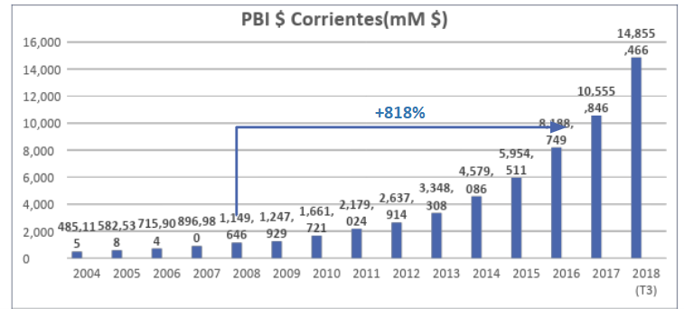
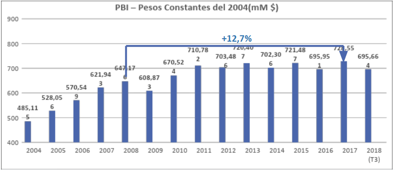
A partir del PBI se derivan otros agregados de medición, todos vinculados por identidades contables:
- Producto Bruto Interno (PBI): valor total de bienes y servicios producidos dentro de un país. PBIpm = PBIcf + Impuestos - Subsidios, donde pm es precios de mercado y cf es costo de factores.
- Producto Bruto Nacional (PBN): valor total de bienes y servicios producidos por los residentes de un país, estén donde estén. PBN = PBI + RF, donde RF es la remuneración de factores: el ingreso generado por factores de producción propiedad de residentes del país.
- Producto Neto Interno (PNI): el PBI menos la depreciación del capital fijo. PNIpm/cf = PBIpm/cf - D, donde D son las amortizaciones o depreciaciones, el monto que se descuenta por el desgaste del capital.
- Producto Neto Nacional (PNN): el PBN menos la depreciación del capital fijo. PNNpm/cf = PBNpm/cf - D.
Circuito macroeconómico abierto
Cada sector cumple un rol específico dentro del circuito:
- Familias: ofrecen factores de producción (trabajo, capital, tierra) a las empresas y reciben a cambio ingreso nacional (YN). Pagan impuestos netos (T = Tt - Tr) al gobierno. Su ingreso disponible (YNd = YN - T = C + SNP) se destina al consumo (C) y al ahorro nacional privado (SNP).
- Empresas: producen bienes y servicios generando un ingreso (Y), que se iguala a la demanda agregada (DA = C + I + G + (X - M)). Venden tanto al mercado interno como al externo (exportaciones, X).
- Gobierno: recauda impuestos (Tt) y realiza transferencias (Tr). Su saldo neto es T = Tt - Tr = SG + G, donde SG es el ahorro gubernamental y G el gasto público, que participa de la demanda agregada.
- Sector financiero: canaliza el ahorro de familias (SNP) y del gobierno (SG) hacia la inversión (I) de las empresas. Recibe o envía flujos de capital del exterior (CKF) y variaciones en reservas (ΔR): SNP + SG + CKF = I + ΔR.
- Sector externo: intercambia bienes y servicios con el resto del mundo mediante exportaciones (X) e importaciones (M); su saldo neto es la balanza comercial (X - M). Su equilibrio se refleja en el flujo de capitales y las reservas: X - M + CKF + RF = ΔR, donde RF es la remuneración de factores. La cuenta corriente (CC) se define como CC = X - M + RF.
Los flujos del circuito son de dos tipos: reales (trabajo, bienes y servicios producidos y consumidos) y monetarios (ingresos, gastos, impuestos, transferencias). El circuito muestra cómo el ingreso generado por la producción (Y) se distribuye entre consumo, ahorro e impuestos, y cómo el ahorro interno (SNP + SG) junto con el ahorro externo (CKF - ΔR) financian la inversión nacional (I). El equilibrio macroeconómico se da cuando la demanda agregada iguala la producción nacional y los flujos externos mantienen equilibrada la balanza de pagos.
Economía abierta y balanza de pagos
- Entradas de divisas (+): ingresos al país por exportaciones, inversiones extranjeras, préstamos recibidos, turismo, entre otros.
- Salidas de divisas (-): egresos por importaciones, pago de intereses, dividendos al exterior, amortización de deuda, viajes, etc.
El ingreso nacional (YN) se relaciona con el producto interno (Y) y las remuneraciones de factores (RF) mediante la identidad YN = Y + RF. En algunos casos YN < Y, cuando hay grandes pagos al exterior: dividendos a accionistas extranjeros o intereses por deuda externa.
Oferta y demanda
- Ley de la demanda: a mayor precio, menor cantidad demandada; a menor precio, mayor cantidad demandada (relación inversa entre precio y cantidad). En el gráfico P-Q, la curva de demanda tiene pendiente negativa.
- Ley de la oferta: a mayor precio, mayor cantidad ofrecida; a menor precio, menor cantidad ofrecida (relación directa). En el gráfico P-Q, la curva de oferta tiene pendiente positiva.
- Equilibrio de mercado: punto donde la cantidad demandada iguala a la cantidad ofrecida, determinando el precio y la cantidad de equilibrio. Un cambio en la oferta o en la demanda desplaza ese equilibrio.
El ejemplo clásico del mercado de helados muestra las dos leyes con números: una tabla de demanda y una de oferta, graficadas sobre los mismos ejes.
La curva de demanda se desplaza cuando cambia algún factor distinto del precio: ingreso, gustos, precios de bienes relacionados, expectativas o número de compradores. La curva de oferta se desplaza cuando cambian los costos de producción, la tecnología, los impuestos o subsidios, las expectativas o el número de vendedores.
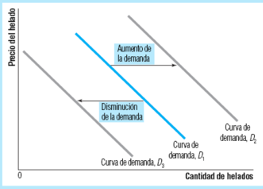
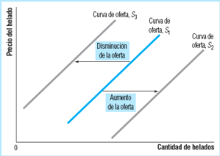
Ambas relaciones pueden escribirse como funciones matemáticas:
- Función de demanda: Qd = f(PBS, Y, PS, PC, X), donde PBS es el precio del bien o servicio, Y el ingreso disponible, PS el precio de bienes sustitutos (que satisfacen las mismas necesidades), PC el precio de bienes complementarios (que se consumen conjuntamente) y X los gustos y preferencias.
- Función de oferta: Qo = f(PBS, PF, Z, X), donde PBS es el precio del bien o servicio, PF el precio de los factores de producción, Z la tecnología disponible y X las expectativas de los productores.
Mercados y elasticidad
El mercado resuelve el problema del trueque: la dificultad de encontrar una coincidencia directa entre lo que necesita un comprador y lo que ofrece un vendedor. Un mercado se caracteriza por:
- La cantidad de empresas u organizaciones que venden el bien o servicio.
- La capacidad de diferenciación o sustitución del bien o servicio.
- El poder de fijación de precios de los oferentes: a mayor competencia, menor poder de fijación de precios.
- Las barreras de entrada o salida del mercado. Es más fácil entrar al mercado de software que al de las petroleras, que exigen grandes inversiones iniciales; para salir, las empresas pueden vender sus activos o cerrar operaciones.
- Elasticidad precio de la demanda (Ep): variación porcentual en la cantidad demandada (Qd) ante una variación porcentual en el precio (P). Ep = (%ΔQd) / (%ΔP). Normalmente es negativa por la ley de la demanda, pero se toma su valor absoluto para facilitar la interpretación.
- Ep = 0: demanda perfectamente inelástica (%ΔQd = 0, no varía).
- Ep < 1: demanda inelástica (poco sensible al precio).
- Ep = 1: demanda unitaria (varía en la misma proporción que el precio).
- Ep > 1: demanda elástica (muy sensible al precio).
- Ep tendiendo a infinito: demanda perfectamente elástica (varía la cantidad permaneciendo constante el precio).
- Elasticidad precio de la oferta (Eo): variación porcentual en la cantidad ofrecida (Qo) ante una variación porcentual en el precio. Eo = (%ΔQo) / (%ΔP), con una interpretación análoga a la de la demanda.
Los cinco casos de la demanda de un vistazo: cuanto más horizontal la curva, más elástica.
No varía
ej.: Pan
Varía menos que proporcional
ej.: Electricidad
Varía directamente proporcional
ej.: Casos particulares
Varía más que proporcional
ej.: Pasajes de avión, golosinas
Precio constante
ej.: Frutas y verduras (ideal)
Y los mismos cinco casos para la oferta, con curvas de pendiente positiva:
No varía
Varía menos que proporcional
Varía directamente proporcional
Varía más que proporcional
Precio constante
Según cuántas empresas participan, qué tan homogéneo es el bien y qué tan altas son las barreras de entrada, se distinguen cuatro tipos de mercado:
| Competencia perfecta | Monopolio | Oligopolio | Competencia monopólica | |
|---|---|---|---|---|
| Cantidad de empresas | Muchas | Una | Pocas | Muchas |
| Información | Perfecta | Perfecta | Imperfecta | Imperfecta |
| Homogeneidad del bien | Homogéneo | Único | Homogéneo o diferenciado | Diferenciado |
| Barreras de entrada o salida | Ninguna | Altas | Altas | Bajas |
| Poder de fijación de precios | Nulo | Alto | Moderado | Bajo |
Dinero
Cumple tres funciones:
- Medio de intercambio: facilita el comercio al eliminar la necesidad del trueque; debe ser ligero y fácil de transportar y almacenar.
- Unidad de cuenta: permite medir y comparar el valor de bienes y servicios.
- Depósito de valor: conserva su valor a lo largo del tiempo, permitiendo ahorrar.
Se distinguen cuatro tipos de dinero: mercancía (con valor intrínseco, como el oro o la plata), fiduciario (sin valor intrínseco, respaldado por la confianza en el emisor: billetes y monedas), electrónico (dinero en forma digital, sin soporte físico: transferencias, criptomonedas) y signo (una promesa de pago futuro: cheques, letras de cambio).
Sus características centrales son la liquidez (facilidad para convertirse en efectivo sin perder valor), el rendimiento (remuneración por poseerlo durante un período), el riesgo (posibilidad de pérdida de valor) y la tasa de interés (costo del dinero, expresado como porcentaje del monto prestado o invertido: a mayor riesgo, mayor tasa).
La demanda de dinero responde a tres motivos: transacción (comprar y vender en el día a día), precaución (cubrir imprevistos) y especulación (aprovechar oportunidades futuras de inversión; a menor tasa de interés, mayor demanda especulativa).
Agregados monetarios
El dinero de una economía se agrupa en agregados de complejidad creciente:
- Cash (C): dinero en efectivo en manos del público.
- Reservas (R): dinero que bancos y cajas de ahorro mantienen en depósito.
- Depósitos (D): dinero depositado en el sistema bancario, en cuentas corrientes (CC, disponible de inmediato, con costo por movimiento), cajas de ahorro (CA, genera intereses, sin costo por movimiento) o plazo fijo (PF, a un período determinado, con tasa más alta y penalización por retiro anticipado).
- Base monetaria (BM): BM = C + R.
- Oferta monetaria (M): M = C + D, que se subdivide en M1 (C + cuentas corrientes), M2 (M1 + cajas de ahorro + plazo fijo menor a un año) y M3 (M2 + plazo fijo mayor a un año).
Tres agentes participan del sistema monetario: el Banco Central, que emite la base monetaria y regula la oferta monetaria; los bancos comerciales, que intermedian entre ahorristas y prestatarios creando dinero mediante el sistema de reservas fraccionarias; y el público, que consume, ahorra e invierte, afectando la demanda de dinero.
| Banco Central | Bancos comerciales | Público | |
|---|---|---|---|
| Activos | Oro y divisas, préstamos al gobierno | Reservas, préstamos a clientes | Circulante y depósitos |
| Pasivos | Circulante, reservas y bonos del Banco Central | Depósitos del público | Dinero en efectivo y depósitos |
Inflación
Según su magnitud, se clasifica en baja (menor al 10% anual), media (entre 10% y 20% anual), alta (mayor al 20% anual) e hiperinflación (más del 50% mensual durante tres meses consecutivos).
Según su origen, se distinguen cinco tipos de inflación:
- De demanda: la demanda agregada supera a la oferta agregada, presionando los precios al alza.
- De costos: sube el costo de producción (materias primas, salarios) y se traslada a los precios finales. El markup es el margen que las empresas agregan sobre sus costos para obtener ganancias.
- Inercial o por expectativas: la creencia de que los precios van a seguir subiendo lleva a ajustes salariales y de precios automáticos, que terminan confirmando la expectativa.
- Estructural: la provocan desequilibrios de fondo en la estructura económica, como monopolios, rigideces laborales o problemas en la cadena de suministro.
- Por política monetaria: la genera un exceso de emisión monetaria respecto del crecimiento económico, sin respaldo productivo.
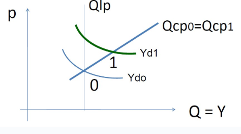
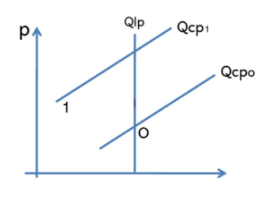
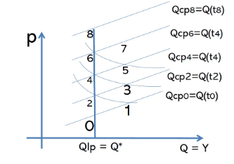
Se mide con dos índices: el Índice de Precios al Consumidor (IPC), que releva la variación porcentual del precio de una canasta representativa de bienes y servicios consumidos por los hogares, y el Índice de Precios al Productor (IPP), que releva esa misma variación a nivel mayorista o productor.
Entre sus efectos: reduce el poder adquisitivo del dinero, distorsiona la asignación de recursos, genera incertidumbre que afecta inversión y ahorro, y erosiona los salarios reales cuando no se ajustan a la par de los precios.
Origen de las fuentes de esta unidad
- Material de cátedra de Empresas de Base Tecnológica 1 (FIUBA): "Introducción" (contexto nacional e internacional, EBT y valor agregado) e "Introducción a la Economía" (definiciones, historia del pensamiento económico, FPP, PBI, circuito macroeconómico, balanza de pagos, oferta y demanda, mercados, dinero e inflación).
Valor y cadena de valor
Esta unidad estudia cómo una empresa genera y comunica valor: qué es el valor agregado y por qué es central para las empresas de base tecnológica (EBT), cómo funciona el ecosistema de incubación y aceleración que ayuda a llevar una tecnología al mercado, y cómo Michael Porter descompone las actividades internas de una empresa en una cadena de valor que se conecta, además, con las cadenas de proveedores, canales y clientes en un sistema de valor. Cierra con las métricas de rentabilidad que permiten medir si ese valor generado se traduce en beneficio económico.
Valor agregado
Tipos de valor agregado
- Funcional. Mejoras técnicas o prácticas que aumentan la funcionalidad del producto (por ejemplo, un software con nuevas características).
- Estético. Cambios en el diseño o la apariencia que hacen al producto más atractivo (por ejemplo, el envase de un producto).
- Emocional. Conexión emocional que un producto genera en el consumidor (por ejemplo, marcas que promueven causas sociales).
Por qué importa el valor agregado
- Medición de la eficiencia. Indica qué tan eficientemente una empresa utiliza sus recursos para generar valor.
- Competitividad. Los productos con mayor valor agregado suelen ser más competitivos en el mercado.
- Precio y margen. A mayor valor agregado, mayor la capacidad de fijar precios y de obtener márgenes de ganancia.
- Satisfacción del cliente. Los productos con alto valor agregado tienden a satisfacer mejor las necesidades y expectativas de los clientes, lo que genera lealtad.
Valor agregado en las EBT
- Innovación tecnológica. Avances únicos o disruptivos.
- Solución de problemas complejos. Productos o servicios que resuelven problemas específicos de manera eficiente.
- Escalabilidad. Capacidad de escalar rápidamente una vez desarrollada la tecnología.
- Innovación continúa. Actualización constante para mantener la relevancia en el mercado.
- Propiedad intelectual y patentes. Protección legal que otorga exclusividad sobre las invenciones o tecnologías desarrolladas.
- Ecosistemas tecnológicos. Integración con otras tecnologías o plataformas que aumenta el valor del producto o servicio.
Incubación y aceleración de EBT
Beneficios de un ecosistema de innovación activo:
- La innovación impulsa el crecimiento económico a largo plazo: genera empleo y mejora la productividad.
- Fomenta la competitividad de las empresas en mercados globales al ofrecer productos y servicios innovadores.
- Permite desarrollar soluciones tecnológicas a problemas sociales y ambientales, mejorando la calidad de vida.
Incubación vs. aceleración
| Característica | Incubación | Aceleración |
|---|---|---|
| Etapa | Temprana, idea o prototipo | Crecimiento, producto en el mercado |
| Duración | Larga (meses a años) | Corta (semanas a meses) |
| Enfoque | Desarrollo del MVP y validación de mercado | Escalamiento rápido y financiamiento |
| Inversión inicial | Baja o nula | Alta, con potencial de retorno rápido |
| Networking | Acceso a mentores y recursos básicos | Acceso a inversores y mentores de alto nivel |
| Espacio físico | Proporcionado por la incubadora | Generalmente no proporcionado |
Proceso de incubación
- Identificación de la idea de negocio.
- Validación del mercado (investigación de mercado, análisis de competencia, evaluación de la demanda).
- Mentoría y asesoramiento (desarrollo del modelo de negocio, estrategia de marketing, planificación financiera).
- Desarrollo del producto mínimo viable, en iteraciones.
- Acceso a financiamiento (inversiones ángel, capital semilla, subvenciones).
- Consideraciones legales y regulatorias (constitución legal, propiedad intelectual, cumplimiento normativo).
- Vigilancia tecnológica (seguimiento de tendencias, análisis de competencia, adaptación tecnológica).
Proceso de aceleración
- Acceso a recursos mediante financiamiento privado y público.
- Red de contactos con inversores, clientes y socios estratégicos.
- Validación y mejora del modelo de negocio.
- Programas estructurados de capacitación intensiva, eventos de networking y mentoría especializada.
- Obtención de financiamiento mediante rondas de negocios e inversores.
Nivel de madurez tecnológica (TRL)
La escala de Technology Readiness Level (TRL) ubica en qué etapa de madurez está una tecnología, del 1 al 9:
| TRL | Descripción |
|---|---|
| 1 | Observación y reporte de principios básicos. |
| 2 | Formulación del concepto tecnológico. |
| 3 | Prueba experimental de concepto. |
| 4 | Validación de componente o prototipo en laboratorio. |
| 5 | Validación de componente o prototipo en entorno relevante. |
| 6 | Demostración de modelo o prototipo en entorno relevante. |
| 7 | Demostración de sistema prototipo en entorno operativo. |
| 8 | Sistema completo y calificado a través de pruebas y demostraciones. |
| 9 | Sistema real probado exitosamente en operaciones reales. |
Cadena de valor
Permite comprender cómo se generan los costos y el valor en cada etapa, lo que facilita identificar áreas de mejora, optimizar procesos y aumentar la eficiencia operativa.
Estructura: actividades primarias y de apoyo
- Actividades primarias. Involucran la creación física del producto, su venta y transferencia al comprador, y la asistencia postventa: logística interna, operaciones, logística externa, marketing y ventas, y servicios.
- Actividades de apoyo. Facilitan y mejoran la eficiencia de las actividades primarias: infraestructura de la empresa, gestión de recursos humanos, desarrollo tecnológico y aprovisionamiento.
Estrategias basadas en la cadena de valor
- Liderazgo en costos. Reducir costos en las actividades de la cadena de valor sin sacrificar calidad.
- Diferenciación. Mejorar las actividades para ofrecer un producto o servicio único que los clientes valoren.
- Enfoque. Concentrarse en un segmento específico del mercado y optimizar la cadena de valor para satisfacer sus necesidades particulares.
Sistema de valor
Estrategias basadas en el sistema de valor
- Colaboración estratégica. Trabajar estrechamente con proveedores para mejorar la calidad o reducir costos.
- Innovación conjunta. Colaborar con socios en la creación de nuevos productos o soluciones tecnológicas.
- Optimización logística. Mejorar la eficiencia de la distribución para reducir tiempos y costos de entrega.
- Satisfacción del cliente. Integrar la retroalimentación de los clientes para mejorar productos y servicios en toda la cadena de valor.
Cuellos de botella
- Limitación de capacidad. Una parte del proceso tiene menos capacidad o velocidad que las demás.
- Reducción del rendimiento. Afecta negativamente la producción total o la calidad del producto.
- Generación de acumulación. Provoca que el trabajo o los productos se acumulen antes del cuello de botella, causando sobrecarga o interrupciones.
Según su duración, pueden ser temporales (ocurren en momentos específicos por fluctuaciones de la demanda o problemas operativos) o permanentes (resultan de limitaciones estructurales del proceso).
Rentabilidad
Rentabilidad = (Ingresos - Costos) / Ingresos x 100.- Rentabilidad unitaria. Beneficio obtenido por unidad vendida:
(Precio de venta - Costo unitario) / Costo unitario x 100. - Margen de ganancia.
Ganancia / Precio de venta x 100.
Punto de equilibrio
Costos fijos / (Precio unitario - Costo variable unitario).Retorno sobre la inversión (ROI)
ROI = (Ganancia neta / Inversión total) x 100.| ROI | Interpretación |
|---|---|
| Menor a 0% | Pérdida en la inversión |
| 0% a 10% | Baja (aceptable en proyectos de bajo riesgo o estratégicos) |
| 10% a 30% | Moderada (aceptable si hay poco riesgo o beneficio indirecto) |
| Mayor a 30% | Buena (esperada en proyectos con alto riesgo o innovación) |
| Mayor a 100% | Excelente (proyectos disruptivos o de alto crecimiento) |
Contabilidad
La contabilidad traduce la actividad económica de una entidad en información estructurada: qué tiene, qué debe y qué generó en un período. Esta unidad recorre los conceptos que sostienen esa traducción: la ecuación patrimonial que nunca se rompe, los dos estados contables centrales (el balance y el cuadro de resultados), el mecanismo de partida doble que garantiza su consistencia, los libros donde se registra cada movimiento y el IVA, que atraviesa cada operación de compra y venta. Para quien monta una empresa de base tecnológica, leer estos estados no es un trámite: es la forma objetiva de saber si el negocio es rentable, si tiene liquidez y si está en condiciones de crecer.
Qué es la contabilidad
Sus objetivos son brindar información:
- Sobre ejercicios pasados, para un análisis comparativo.
- Sobre el ejercicio presente, para determinar la situación económica, financiera y patrimonial.
- Sobre el ejercicio futuro, para proyectar y planificar.
Terminología contable de base:
- Patrimonio: conjunto de bienes, derechos y obligaciones de una entidad.
- Estructura patrimonial: composición del patrimonio en términos de activos, pasivos y patrimonio neto.
- Variación patrimonial: cambios en el patrimonio de una entidad debido a transacciones o eventos económicos.
- Hecho económico: evento que modifica el patrimonio de una entidad.
Tres pares de términos que se confunden fácilmente:
- Vida útil técnica vs. vida útil contable: la técnica es el tiempo que un activo puede usarse físicamente; la contable es el plazo durante el cual la entidad espera que ese activo contribuya a generar ingresos.
- Valor contable vs. valor fiscal vs. valor real: el contable es el registrado en los libros (costo histórico menos la depreciación); el fiscal es el utilizado para fines tributarios; el real es el de mercado o de reemplazo.
- Deuda vs. provisión vs. previsión: la deuda es una obligación presente de la que se sabe cuánto y cuándo pagar; la provisión es un pasivo estimado para obligaciones futuras del que se sabe cuándo pero no cuánto; la previsión es un gasto anticipado para cubrir posibles pérdidas, del que no se sabe ni cuándo ni cuánto.
Estados contables
Balance
La ecuación contable nunca se rompe: todo lo que la entidad tiene (activo) está financiado por deudas con terceros (pasivo) o por aportes y resultados propios (patrimonio neto).
Clasificación del activo:
- Activo corriente: recursos que se espera convertir en efectivo o consumir en el mismo año (disponibilidades, inversiones, créditos, bienes de cambio).
- Activo no corriente: recursos que se espera mantener por más de un año (rodado, bienes de uso, amortizaciones acumuladas, cargos diferidos, inmuebles).
Clasificación del pasivo:
- Pasivo corriente: obligaciones que se espera liquidar en el mismo año (deudas bancarias, comerciales o fiscales, provisiones, previsiones).
- Pasivo no corriente: obligaciones que se espera liquidar en más de un año (deudas, provisiones o previsiones no corrientes).
Patrimonio neto: obligaciones con el propio ente.
- Capital: aportes de los socios o accionistas.
- Reservas: utilidades retenidas para fortalecer el patrimonio.
- Resultados: utilidades o pérdidas del ejercicio.
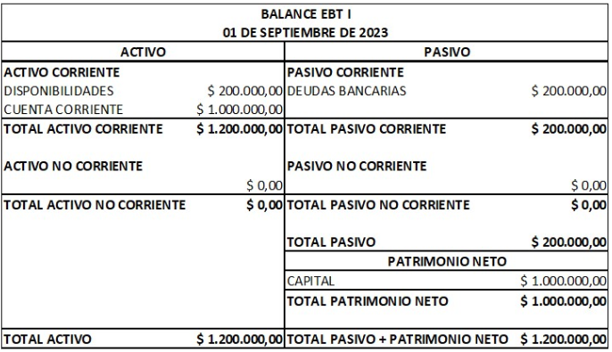
Cuadro de resultados
| Sección del cuadro | Qué representa | Cómo se calcula / qué incluye |
|---|---|---|
| Ventas | Ingresos generados por la actividad principal de la entidad. | Monto neto facturado por ventas. |
| Costo de ventas | Costo directo de los bienes vendidos. | Materias primas, compras, mano de obra directa. |
| Utilidad bruta | Ganancia inicial antes de gastos operativos. | Ventas menos costo de ventas. |
| Gastos de administración y ventas | Gastos para operar el negocio. | Sueldos, cargas sociales, alquiler, publicidad, servicios. |
| Utilidad de explotación | Resultado después de restar gastos operativos. | Utilidad bruta menos gastos de administración y ventas. |
| Ingresos y gastos secundarios | Resultados no principales (no operativos). | Intereses, comisiones, otros ingresos o gastos. |
| Utilidad operativa | Resultado de la actividad total del negocio. | Utilidad de explotación más o menos ingresos y gastos secundarios. |
| Intereses ganados / pagados | Resultados financieros. | Intereses por inversiones o deudas. |
| Utilidad neta operativa | Resultado después de efectos financieros. | Utilidad operativa más intereses ganados, menos intereses pagados. |
| Utilidad por venta de bien de uso | Resultado extraordinario. | Ganancia por venta de activos fijos. |
| Utilidad neta del ejercicio | Resultado antes de ajustes o impuestos. | Utilidad neta operativa más o menos otros resultados. |
| Ajuste de ejercicios anteriores | Corrección de errores o ajustes contables. | Resultados no pertenecientes al ejercicio actual. |
| Utilidad antes de impuesto a las ganancias | Resultado final antes de impuestos. | Igual a la utilidad neta del ejercicio, si no hay ajustes. |
| Impuesto a las ganancias (35%) | Carga impositiva del período. | 35% de la utilidad antes de impuestos. |
| Utilidad neta | Ganancia final de la empresa. | Utilidad antes de impuestos menos impuesto a las ganancias. |
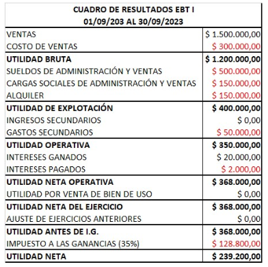
Aspectos económicos y financieros
- Aspecto económico: se refleja en el cuadro de resultados y en la cuenta de utilidades, mostrando la rentabilidad de la entidad.
- Aspecto financiero: se refleja en la cuenta disponibilidades (caja y bancos) del activo corriente del balance, mostrando la liquidez de la entidad. Tiene que ser suficiente para solventarse en caso de emergencias.
Cuentas contables
Cuentas patrimoniales: reflejan los elementos del patrimonio (activo, pasivo, patrimonio neto).
- Activo: bienes y derechos de la entidad, ordenados de mayor a menor liquidez.
- Pasivo: obligaciones y deudas de la entidad, ordenadas de mayor a menor liquidez y por tipo de acreedor.
- Patrimonio neto: obligaciones hacia los socios o accionistas de la entidad, ordenadas por categoría (capital, reservas, resultados).
Cuentas transitorias: reflejan los resultados del ejercicio (ingresos, costos, gastos) y la producción.
- Ingresos: aumentos en el patrimonio neto por actividades principales o secundarias.
- Egresos: disminuciones en el patrimonio neto por actividades principales o secundarias.
- Producción: valor de los bienes y servicios producidos por la entidad durante el ejercicio.
Partida doble
Principios:
- Deudor y acreedor: cada cuenta tiene un lado deudor (aumentos en activos y gastos) y un lado acreedor (aumentos en pasivos, patrimonio neto e ingresos).
- Debe y haber: el debe registra los aumentos en cuentas de activo y gastos; el haber registra los aumentos en cuentas de pasivo, patrimonio neto e ingresos.
- Equilibrio: la suma del debe debe ser igual a la suma del haber en cada transacción. Todo lo que entra debe salir. Las pérdidas se debitan y las ganancias se acreditan.
- Devengamiento vs. cobro/pago: el devengamiento reconoce ingresos y gastos cuando se generan, independientemente de cuándo se cobran o se pagan.
Plan de cuentas, libro diario y libro mayor
- Objetivo: facilitar el registro, la clasificación y el análisis de las transacciones contables.
- Estructura: generalmente se organiza en categorías principales (activo, pasivo, patrimonio neto, ingresos, gastos) y subcategorías detalladas.
Manual de cuentas: documento que describe detalladamente cada cuenta del plan de cuentas, incluyendo su definición, naturaleza (deudora o acreedora) y ejemplos de transacciones que se registran en ella.
| Código | Detalle |
|---|---|
| 1 | Activo |
| 1.1 | Disponibilidades |
| ... | ... |
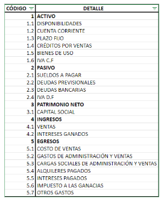
Libro diario: estado contable que registra todos los hechos económicos realizados por una entidad.
- Ordenado cronológicamente y por tipo de cuenta.
- Sirve para conocer la situación económica y financiera en un momento determinado, así como la rentabilidad.
- Permite elaborar otros estados contables como el balance, el libro mayor y el cuadro de resultados.
| Fecha | Código | Detalle | Debe | Haber |
|---|---|---|---|---|
| 01/01/20XX | EGRESO | ALQUILER | $ 150.000,00 | |
| ... | ... | ... | ... | ... |
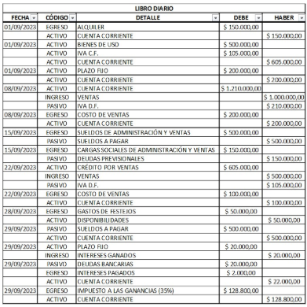
Libro mayor: estado contable que registra los movimientos de cada una de las cuentas contables de una entidad.
- Organizado por cuenta, mostrando los débitos y créditos de cada una.
- Permite conocer el saldo de cada cuenta en un momento determinado, ayudando a identificar errores y a analizar la situación financiera.
| Fecha | Detalle | Debe | Haber | Saldo |
|---|---|---|---|---|
| 01/01/20XX | DISPONIBILIDADES | $ 200.000,00 | $ 200.000,00 | |
| ... | ... | ... | ... | ... |
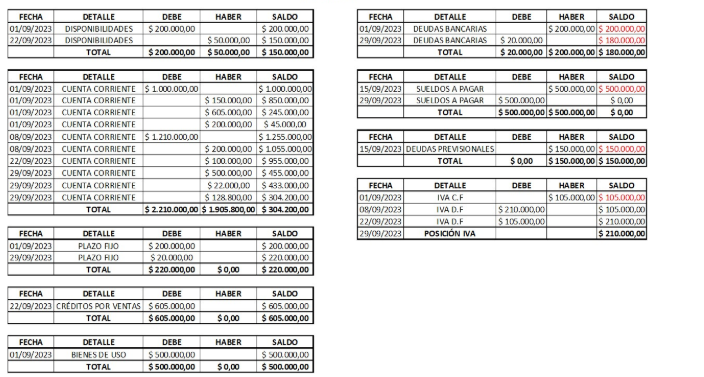
| Libro diario | Libro mayor | |
|---|---|---|
| Contenido | Transacciones del día a día | Movimientos de las cuentas |
| Objetivo | Control del día a día | Análisis de la evolución y el saldo de las cuentas |
| Orden | Cronológico | Por cuenta |
| Obligatorio | Sí | No |
Impuesto al valor agregado (IVA)
- IVA crédito fiscal: monto del IVA que una empresa puede deducir del IVA que debe pagar al Estado, correspondiente al IVA pagado en sus compras y gastos relacionados con su actividad económica.
- IVA débito fiscal: monto del IVA que una empresa debe pagar al Estado, correspondiente al IVA cobrado en sus ventas de bienes y servicios.
Si el IVA débito fiscal es mayor que el IVA crédito fiscal, la empresa debe pagar la diferencia al Estado. Si el IVA crédito fiscal es mayor, la empresa tiene saldo a favor.
Finanzas y valor tiempo del dinero
Las finanzas estudian cómo obtener, administrar e invertir dinero para maximizar su valor a lo largo del tiempo. Esta unidad recorre esa idea central, el valor tiempo del dinero, y todo lo que se construye sobre ella: las tasas de interés (simple, compuesto, nominal y efectiva), la valuación de flujos de efectivo múltiples (anualidades y perpetuidades), los sistemas de devolución de préstamos y el efecto de la inflación y el tipo de cambio sobre los rendimientos reales. Para quien monta una empresa de base tecnológica, estos conceptos son la base para decidir si conviene tomar un financiamiento, cuánto vale hoy un flujo de ingresos futuro o cómo comparar ofertas de crédito con condiciones distintas.
Qué son las finanzas
Según el ámbito de aplicación se distinguen cuatro tipos:
- Finanzas personales: gestión del dinero a nivel individual o familiar para alcanzar objetivos financieros.
- Finanzas corporativas: gestión financiera dentro de las empresas para maximizar su valor y asegurar su sostenibilidad.
- Finanzas públicas: gestión de los recursos financieros del sector público para garantizar el bienestar social y el desarrollo económico.
- Finanzas internacionales: estudio de los flujos financieros entre países y la gestión de riesgos asociados a las transacciones internacionales.
Valor tiempo del dinero
Conviene distinguir dos nociones de valor:
- Valor nominal: la cantidad de dinero expresada en términos monetarios, sin considerar la inflación ni el tiempo transcurrido.
- Valor tiempo: el valor ajustado del dinero considerando el momento en que se recibe o se paga.
La fórmula que conecta un valor presente con su equivalente futuro es la base de toda la unidad:
Vf = Vp x (1 + i)^n- Vf: valor futuro.
- Vp: valor presente.
- i: tasa de interés o rendimiento por período.
- n: número de períodos.
Vf = 100.000 x (1 + 0,10)^3 = 100.000 x 1,331 = $133.100La misma fórmula funciona en las dos direcciones: despejando Vp se descuenta un flujo futuro a valor de hoy (Vp = Vf / (1 + i)^n), y usándola directo se capitaliza un monto presente hacia el futuro. Comparar, sumar o restar flujos de dinero de distintos momentos siempre exige antes llevarlos a un mismo punto en el tiempo: es la idea de fondo de toda la unidad.
Valor de la empresa
El objetivo de una empresa es maximizar el valor para sus accionistas a largo plazo mediante decisiones financieras estratégicas. Ese valor se calcula con la misma lógica que cualquier otro activo financiero: como el valor presente de los flujos de caja futuros esperados, descontados a una tasa que refleje el riesgo asociado.
V = Sum(t=1 hasta infinito) [ FFt / (1 + Costo del Dinero)^t ]- V: valor de la empresa.
- FFt: flujo de fondos esperado en el período t.
- Costo del Dinero: tasa de descuento que refleja el riesgo asociado a esos flujos.
- t: cada período futuro, sumado desde el primero y sin un horizonte definido.
Interés y tasas
Interés simple vs interés compuesto
| Interés simple | Interés compuesto | |
|---|---|---|
| Base de cálculo | Siempre el capital inicial | Capital inicial más los intereses acumulados |
| Valor futuro | Vf = Vp x (1 + n x i) | Vf = Vp x (1 + i)^n |
| Interés total en n períodos | I = Sum(In), con cada In igual | I = Vf - Vp |
Simple: Vf = 10.000 x (1 + 6 x 0,05) = 10.000 x 1,30 = $13.000 (interes = $3.000)
Compuesto: Vf = 10.000 x (1 + 0,05)^6 = 10.000 x 1,3401 = $13.400,96 (interes = $3.400,96)Tasa Nominal Anual y Tasa Efectiva Anual
TNA = i x m- i: tasa por período.
- m: número de períodos de capitalización en un año.
TEA = (1 + i)^m - 1- i: tasa por período.
- m: número de períodos de capitalización en un año.
Cuando la tasa nominal se expresa para un período distinto al de capitalización, el valor futuro se calcula así:
Vf = Vp x (1 + TNA / m)^mTEA = (1 + 0,02)^12 - 1 = 1,2682 - 1 = 26,82%Tasas equivalentes
- De TNA a TEA:
TEA = (1 + TNA / m)^m - 1 - De TEA a TNA:
TNA = m x [(1 + TEA)^(1/m) - 1] - De TNA a tasa nominal de otro período (TNN):
TNN = TNA / m, donde m es el número de esos períodos que entran en un año. - De TEA a tasa efectiva de otro período (TEX):
(1 + TEX)^Y = (1 + TEA)^1, donde Y es la cantidad de veces que ese otro período entra en un año: la tasa TEX, capitalizada Y veces, tiene que reproducir la TEA.
Flujos de efectivo múltiples
La línea de tiempo de flujos de fondos es la herramienta para pensar esto: cada flujo se descuenta o capitaliza de forma independiente antes de poder sumarlo con los demás.
Anualidades
Vp = C x f(i, n) = C x [(1 + i)^n - 1] / [(1 + i)^n x i]- C: pago periódico.
- i: tasa de interés por período.
- n: número de períodos.
- f(i, n): factor de valor presente de anualidades.
Vf = C x F(i, n) = C x [(1 + i)^n - 1] / iEs la misma anualidad, pero proyectada a valor futuro en lugar de traída a valor presente.
(1 + 0,015)^12 = 1,1956
f(i, n) = (1,1956 - 1) / (1,1956 x 0,015) = 0,1956 / 0,01793 = 10,908
Vp = 1.000 x 10,908 = $10.907,51Perpetuidades
Vp = C / iNo existe una fórmula de valor futuro para una perpetuidad, porque los flujos son infinitos: no hay un último período al cual proyectar el valor.
Vp = 500 / 0,01 = $50.000Devolución de préstamos
Todo préstamo tiene tres componentes:
- Capital: el monto inicial prestado.
- Intereses: el costo adicional por el uso del capital prestado.
- Cuotas: los pagos periódicos, que incluyen una porción de capital y una de intereses.
Existen cuatro sistemas de devolución, que reparten esas dos porciones de forma distinta a lo largo del préstamo.
Sistema Francés
Cuotas constantes que incluyen una proporción variable de capital e intereses sobre el saldo deudor. Es el sistema más común.
Interes: Ii = Saldo Deudor Anterior x i
Amortizacion: Ai = P - IiDonde P es la cuota constante (el pago periódico) e Ii el interés del período i, calculado sobre el saldo deudor que quedó del período anterior. La amortización Ai (la porción de capital que se cancela en esa cuota) es lo que sobra de la cuota una vez descontado el interés. A lo largo del préstamo, la suma de todas las amortizaciones devuelve el capital original: Capital = Sum(Ai).
Para ver cómo se comporta cada sistema, las figuras que siguen usan un mismo préstamo de referencia: capital de $1.000, al 10% por período, en 4 cuotas.
| n | Cuota | Interés | Amortización | Saldo |
|---|---|---|---|---|
| 1 | $315,47 | $100,00 | $215,47 | $784,53 |
| 2 | $315,47 | $78,45 | $237,02 | $547,51 |
| 3 | $315,47 | $54,75 | $260,72 | $286,79 |
| 4 | $315,47 | $28,68 | $286,79 | $0,00 |
| Σ | $1.261,88 | $261,88 | $1.000,00 |
Sistema Alemán
Cuotas decrecientes, con amortización constante y una disminución progresiva de los intereses sobre saldos. Suele usarse en préstamos entre empresas.
Amortizacion constante: A = P / n
Interes: Ii = Saldo Deudor Anterior x i
Cuota: Pi = A + IiAcá P es el capital prestado y n el número de cuotas: la amortización A es siempre la misma, y la cuota Pi baja período a período porque el saldo deudor (y con él, el interés) disminuye.
| n | Cuota | Interés | Amortización | Saldo |
|---|---|---|---|---|
| 1 | $350,00 | $100,00 | $250,00 | $750,00 |
| 2 | $325,00 | $75,00 | $250,00 | $500,00 |
| 3 | $300,00 | $50,00 | $250,00 | $250,00 |
| 4 | $275,00 | $25,00 | $250,00 | $0,00 |
| Σ | $1.250,00 | $250,00 | $1.000,00 |
Ai = P - Ii); en el Alemán, el Bullet y el Directo es el capital prestado (A = P / n, Ii = P x i). Conviene revisar siempre a qué se refiere P antes de aplicar una fórmula: el ejemplo de abajo lo muestra con números concretos.Sistema Bullet
Pago único al final del plazo: durante el préstamo solo se pagan los intereses periódicos, y el capital se devuelve entero al vencimiento. Suele usarse en bonos.
Cuota periodica (solo interes): Ii = P x i
Al final del plazo: se paga el capital P| n | Cuota | Interés | Amortización | Saldo |
|---|---|---|---|---|
| 1 | $100,00 | $100,00 | $0,00 | $1.000,00 |
| 2 | $100,00 | $100,00 | $0,00 | $1.000,00 |
| 3 | $100,00 | $100,00 | $0,00 | $1.000,00 |
| 4 | $1.100,00 | $100,00 | $1.000,00 | $0,00 |
| Σ | $1.400,00 | $400,00 | $1.000,00 |
Sistema Directo
Cuotas constantes de capital e intereses, pero calculados siempre sobre el capital inicial y no sobre el saldo deudor. Suelen ofrecerlo las entidades conocidas como "efectivo rápido".
Amortizacion constante: A = P / n
Interes: Ii = P x i
Cuota: Pi = A + IiLa diferencia con el sistema Alemán es sutil pero importante: acá el interés Ii se calcula siempre sobre el capital inicial P, no sobre el saldo deudor restante, así que la cuota Pi también queda constante.
| n | Cuota | Interés | Amortización | Saldo |
|---|---|---|---|---|
| 1 | $350,00 | $100,00 | $250,00 | $750,00 |
| 2 | $350,00 | $100,00 | $250,00 | $500,00 |
| 3 | $350,00 | $100,00 | $250,00 | $250,00 |
| 4 | $350,00 | $100,00 | $250,00 | $0,00 |
| Σ | $1.400,00 | $400,00 | $1.000,00 |
Sistema Francés (cuota constante = $1.206,34):
| Cuota | Interés | Amortización | Saldo restante |
|---|---|---|---|
| 1 | 300,00 | 906,34 | 2.093,66 |
| 2 | 209,37 | 996,98 | 1.096,68 |
| 3 | 109,67 | 1.096,68 | 0,00 |
Sistema Alemán (amortización constante = $1.000):
| Cuota | Interés | Amortización | Saldo restante |
|---|---|---|---|
| 1 | 300,00 | 1.000,00 | 2.000,00 |
| 2 | 200,00 | 1.000,00 | 1.000,00 |
| 3 | 100,00 | 1.000,00 | 0,00 |
| Sistema Francés | Sistema Alemán | Sistema Bullet | Sistema Directo | |
|---|---|---|---|---|
| Cuota | Constante | Disminuye | Constante | Constante |
| Amortización inicial | Creciente | Constante | 0 hasta el final | Constante |
| Proporción de intereses al inicio | Más interés que capital | Más capital que interés | Solo intereses | Constante |
Refinanciación de préstamos
Conviene pensar en qué momento conviene refinanciar según el sistema de devolución elegido, porque cada uno deja pendiente una proporción distinta de capital:
- Sistema Francés: a mitad de camino se pagó poca amortización y mucho interés: queda la mayor parte del capital por devolver.
- Sistema Alemán: a mitad de camino se pagó mucha amortización y poco interés: queda relativamente poco capital pendiente.
- Sistema Bullet: no se pagó nada de capital, solo intereses: el capital pendiente es siempre el total.
- Sistema Directo: se pagó una cantidad constante de capital e intereses: el capital pendiente baja de forma lineal y previsible.
El gráfico compara el saldo de deuda de los cuatro sistemas con el préstamo de referencia ($1.000 al 10% en 4 cuotas): cuanto más abajo la línea, menos se debe a esa altura, y mejor parado se llega a una refinanciación.
Inflación y tipo de cambio
El cálculo de las tasas de interés debe considerar la inflación para reflejar el valor real del dinero a lo largo del tiempo. La tasa efectiva es nominal respecto de la inflación (no la descuenta); la tasa real sí está ajustada por inflación.
(1 + Tasa Real) = (1 + Tasa Nominal) / (1 + Inflacion)Puede resultar atractivo invertir en moneda local por una tasa nominal alta, pero si esa moneda se deprecia frente a una moneda extranjera de referencia, el valor real de la inversión puede terminar disminuyendo. Por eso, al evaluar rendimientos de inversiones internacionales hay que incorporar la depreciación o apreciación de la moneda:
Rendimiento Real = (1 + Rendimiento Nominal) x (1 + Cambio en Tipo de Cambio) - 1Rendimiento Real = (1 + 0,60) x (1 - 0,15) - 1 = 1,60 x 0,85 - 1 = 0,36Evaluación de proyectos
Esta unidad cubre cómo decidir si conviene ejecutar un proyecto de inversión: los tres criterios cuantitativos centrales (VAN, TIR y período de recuperación), las distintas formas de armar el flujo de fondos que alimenta esos cálculos, el capital de trabajo operativo que financia el día a día del proyecto una vez en marcha, y los dos instrumentos financieros más comunes para levantar o colocar capital (bonos y acciones) con sus reglas de valuación. Para una empresa de base tecnológica estos criterios son los que separan una buena idea de un proyecto que efectivamente conviene ejecutar.
Qué es evaluar un proyecto
Permite tomar decisiones informadas sobre la inversión en proyectos, considerando los costos, los beneficios, los riesgos y los retornos esperados. Los tres valores cuantitativos que sostienen esa decisión son el VAN, la TIR y el período de recuperación (payback), desarrollados a continuación.
VAN, TIR y payback: los tres valores clave
Valor Actual Neto (VAN)
VAN = Σ FCt / (1 + r)^t, sumando desde t = 0 (donde FC0 es la inversión inicial, con signo negativo) hasta el último período del proyecto. La tasa r suele ser la TREMA (Tasa de Rendimiento Mínima Aceptable): el piso de rentabilidad que la empresa exige para inmovilizar capital en ese proyecto en lugar de en otra alternativa.
Criterio de decisión: se acepta el proyecto si VAN mayor a cero (crea valor por encima de la TREMA exigida); se rechaza si VAN menor a cero; si VAN es igual a cero, el proyecto rinde exactamente la TREMA y resulta indiferente frente a la alternativa de referencia.
Tasa Interna de Retorno (TIR)
Se calcula resolviendo la ecuación 0 = Σ FCt / (1 + TIR)^t. A diferencia del VAN, que da un monto, la TIR da un porcentaje directamente comparable contra otras tasas.
Criterio de decisión: se compara la TIR contra la tasa de corte (la TREMA). Si TIR mayor a la tasa de corte, se acepta el proyecto; si TIR menor a la tasa de corte, se rechaza. Para un proyecto convencional (un solo cambio de signo en el flujo de fondos) este criterio coincide siempre con el del VAN.
Período de recuperación (payback)
Se calcula sumando los flujos de caja período a período hasta que el acumulado iguale la inversión inicial; el momento en que eso ocurre es el payback.
Criterio de decisión: se compara el payback obtenido contra el plazo máximo que la empresa esté dispuesta a esperar para recuperar el capital. Cuanto más corto, mejor, porque el capital vuelve a estar disponible antes.
Ejemplo numérico: un mismo proyecto, tres criterios
Un proyecto requiere una inversión inicial de $95.000 y genera flujos de caja de $40.000 al final de cada uno de los próximos 3 años. La TREMA de la empresa es 10% anual.
| Período (t) | Flujo de caja | Flujo descontado a r = 10% | Acumulado sin descontar |
|---|---|---|---|
| 0 | -95.000 | -95.000,00 | -95.000 |
| 1 | +40.000 | 36.363,64 | -55.000 |
| 2 | +40.000 | 33.057,85 | -15.000 |
| 3 | +40.000 | 30.052,59 | +25.000 |
VAN: la suma de los flujos descontados de los períodos 1 a 3 da 99.474,08. VAN = 99.474,08 - 95.000 = +4.474,08. Como VAN mayor a cero, se acepta el proyecto.
TIR: resolviendo la ecuación del payback de la anualidad para estos flujos, la TIR resulta ≈ 12,66%. Como 12,66% es mayor que la TREMA del 10%, el criterio de la TIR también indica aceptar, coincidiendo con el VAN.
Payback: al cierre del año 2 falta recuperar $15.000 de los $40.000 que entran en el año 3, es decir 15.000 / 40.000 = 0,375 del período. Payback = 2 + 0,375 = ≈ 2,4 años (2 años y unos 4 a 5 meses).
Estrategias para armar el flujo de fondos
Sobre esa base, hay tres formas de encarar la proyección de los números, según por dónde se empiece:
| Enfoque | Punto de partida | Qué hace |
|---|---|---|
| Descendente | Ventas proyectadas | Deduce los costos, los gastos y los impuestos para determinar la rentabilidad final. |
| Ascendente | Costos y gastos estimados | Proyecta las ventas necesarias para cubrirlos y generar ganancia. |
| Fiscal | Impacto de los impuestos | Incorpora explícitamente deducciones fiscales y créditos tributarios a los flujos de caja del proyecto. |
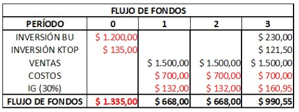
Capital de Trabajo Operativo (KTOP)
KTOP = Activo Corriente (operativo) - Pasivo Corriente (operativo)
- Activo Corriente Operativo: activo de corto plazo vinculado al ciclo operativo de la empresa. No incluye caja, bancos ni inversiones financieras, porque esos rubros no forman parte del ciclo operativo. Se valúa aplicando el principio de valuación de activos: se usa información de activos similares en el mercado para determinar su valor razonable.
- Pasivo Corriente Operativo: pasivo de corto plazo vinculado al ciclo operativo de la empresa. No incluye préstamos financieros ni deudas bancarias, porque tampoco forman parte del ciclo operativo.
Bonos
| Característica | Qué es |
|---|---|
| Valor nominal | Monto que se pagará al vencimiento del bono. |
| Tasa de interés (cupón) | Porcentaje del valor nominal que se paga periódicamente como interés. |
| Plazo | Tiempo hasta el vencimiento del bono. |
| Precio de mercado | Valor actual del bono en el mercado, que puede ser diferente al valor nominal. |
Valuación de bonos: el precio de un bono se determina a partir del valor presente de sus cupones y el valor presente de su valor nominal al vencimiento.
Cláusulas habituales:
- Rescatable: permite al emisor pagar el bono antes del vencimiento, generalmente para volver a emitir deuda a una tasa cupón menor.
- Convertible: permite al tenedor convertir el bono en acciones de la empresa emisora bajo ciertas condiciones.
- Exento: no paga impuestos sobre los intereses generados; suelen emitirlos gobiernos locales o entidades sin fines de lucro.
Acciones
| Característica | Qué es |
|---|---|
| Valor nominal | Monto asignado a cada acción en el momento de su emisión. |
| Valor de mercado | Precio al que se negocian las acciones en el mercado bursátil, determinado por oferta y demanda. |
| Dividendos | Parte de las ganancias distribuidas a los accionistas, en efectivo o en acciones adicionales. |
| Derechos de voto | Permiten participar en decisiones importantes de la empresa, como la elección del directorio. |
Tipos de acciones:
- Ordinarias: otorgan derechos de voto y participación en los dividendos.
- Preferidas: tienen prioridad en el pago de dividendos y en la liquidación de activos, pero generalmente no otorgan derechos de voto.
Valuación de acciones: se puede realizar mediante el descuento de flujos de caja futuros, el modelo de crecimiento de dividendos o comparaciones con empresas similares en el mercado. Dos herramientas puntuales:
- Índice PER (Price to Earnings Ratio): relación entre el precio de la acción y las ganancias por acción. Indica cuántas veces las ganancias actuales están reflejadas en el precio de la acción.
PER = Precio de la acción / Ganancias por acción. - Modelo de Gordon: valora la acción a partir del valor presente de los dividendos futuros esperados, asumiendo un crecimiento constante.
Valor de la acción = D1 / (r - g), donde D1 es el dividendo esperado el próximo año, r es la tasa de descuento requerida y g es la tasa de crecimiento de los dividendos.
Bonos y acciones en síntesis
| Bonos | Acciones | |
|---|---|---|
| Naturaleza | Deuda: el emisor debe pagar | Propiedad: parte del capital social |
| Renta | Fija, pactada por el cupón | Variable, según dividendos y precio de mercado |
| Prioridad de cobro | Cobra antes que los accionistas | Cobra después (las preferidas, antes que las ordinarias) |
| Derechos de voto | No otorga | Las ordinarias sí; las preferidas, en general no |
Costos y rentabilidad
Entre la contabilidad y la evaluación de proyectos falta una pieza: saber cuánto cuesta producir y cuánto queda de ganancia. Este capítulo define el costo, lo distingue del gasto (la pregunta más repetida del tema) y clasifica los costos en cinco dimensiones que conviven sobre un mismo costo. Cierra con las herramientas para saber si un producto o servicio deja plata: rentabilidad, margen de ganancia, punto de equilibrio y ROI, cada una con su fórmula y un ejemplo numérico.
- Está ligado al consumo o desgaste de factores, es decir, al sacrificio.
- Conlleva un componente de subjetividad.
Costo vs. gasto
Tipos de costos
De producción
| Tipo | Definición | Ejemplo |
|---|---|---|
| Variables | Directamente proporcionales con la cantidad producida o vendida | Publicidad |
| Fijos | Invariantes ante cambios de la cantidad producida o vendida | Alquiler de oficina |
| Mixtos | Un poco de cada uno | Energía eléctrica (parte fija, parte variable) |
De producto o servicio
| Tipo | Definición | Ejemplo |
|---|---|---|
| Directos | Rastreable su aplicación directa a un producto o servicio específico | Materia prima, mano de obra |
| Indirectos | No rastreables directamente; se distribuyen entre toda la producción y venta | Electricidad y refrigeración |
De actividad
| Tipo | Definición | Ejemplo |
|---|---|---|
| Producción | Relacionados con la fabricación del producto o servicio | Herramientas y licencias de desarrollo |
| Operación | Gastos no productivos: administrativos, ventas, etc. | Salario de atención al cliente |
De acumulación
| Tipo | Definición | Ejemplo |
|---|---|---|
| Órdenes de trabajo | La demanda antecede a la oferta | Reparación de un auto cuando se rompe |
| Proceso | La oferta antecede a la demanda | Proceso de fabricación del auto |
De tiempo
| Tipo | Definición |
|---|---|
| Históricos | Costos ya incurridos en el pasado |
| Reales | Costos del período actual |
| Predeterminados | Calculables a futuro en base a los históricos y reales |
Triángulo de hierro
Las tres restricciones de un proyecto que condicionan la calidad del resultado: si movés una, movés las otras.
Fernando dos Santos Claro
El fin del costo es obtener un beneficio.
Objeto de costo
Tres pares que se confunden
| Par | Distinción |
|---|---|
| Costo vs. inversión | Costo: inversión de corto plazo. Inversión: costo de largo plazo. |
| Valor vs. precio vs. costo | Valor: estimación. Precio: importe. Costo: dinero erogado para la producción. |
| Costo vs. gasto | Gasto: al adquirir. Costo: al consumir en el proceso productivo. |
- Contabilidad de costos: parte de la contabilidad administrativa.
- Costos de producción: parte de empresas manufactureras.
Amortizaciones
Se refleja en los estados contables y se descuenta a la utilidad antes de calcular los impuestos a la ganancia: ayuda a pagar menos impuestos. Se rige por pautas de AFIP.
Rentabilidad
- G: ganancia neta = Ingresos − Costos totales
- C: costos totales = costos asociados al producto o servicio
Servicio de mantenimiento de servidores:
- Ingresos por cliente: $10.000
- Costos totales por cliente: $7.000
- → Ganancia neta = $3.000
Eso significa que por cada peso que invertís, ganás 42,86 centavos.
Rentabilidad unitaria
Con Pu = precio de venta unitario y Cu = costo unitario.
Margen de ganancia
Punto de equilibrio
Mínimo de ventas necesario para solventar los gastos.
- Cf: costos fijos
- Cvu: costo variable unitario
- Desarrollar una app SaaS cuesta USD 10.000 (costo fijo inicial)
- Cada usuario cuesta USD 2/mes (servidores, soporte)
- Se cobra USD 10/mes por usuario
Recién a partir del usuario 1.250 el proyecto empieza a dar ganancia.
ROI
- I: inversión total
- Ing: ingresos totales
- Ii: inversión inicial
- Inversión inicial: USD 15.000
- Ingresos generados: USD 25.000
- → Ganancia neta = 25.000 − 15.000 = 10.000
Y con ese número, cómo se lo interpreta:
| ROI | Interpretación |
|---|---|
| < 0% | Pérdida → no viable |
| 0% a 10% | Bajo → sólo aceptable en proyectos de bajo riesgo o estratégicos |
| 10% a 30% | Moderado → puede ser aceptable si hay poco riesgo o beneficio indirecto |
| > 30% | Bueno → en general, se considera rentable |
| > 100% | Excelente → recuperás la inversión y duplicás la ganancia |
Derecho: conceptos y ramas
Esta unidad presenta las nociones básicas de derecho que atraviesan el resto de la materia: qué es una norma, cómo se dividen las ramas del ordenamiento jurídico, qué tradiciones jurídicas existen en el mundo y cómo se organiza el derecho constitucional argentino. Cierra con las fuentes del derecho, la jerarquía de las normas (pirámide de Kelsen), la constitucionalización del derecho privado y los principios que limitan el ejercicio de los derechos. Para una empresa de base tecnológica estas bases explican, por ejemplo, por qué el Estado puede otorgar regímenes de promoción, por qué una ley provincial no puede contradecir a una nacional, y qué garantías y obligaciones rigen cualquier contrato o relación comercial.
Concepto general de derecho
Cumple cuatro funciones principales:
- Establece pautas de conducta.
- Regula interacciones entre individuos.
- Estipula declaraciones, obligaciones, derechos y garantías.
- Establece pautas de regulación de acceso y permanencia a recursos.
Para quien monta una empresa de base tecnológica, el derecho importa por tres motivos:
- Permite entender las bases conceptuales e históricas de por qué y cómo opera la sociedad en términos de empresas.
- Da la comprensión de la tradición normativa que le permite al Estado impulsar regímenes de promoción que bajan cargas impositivas a los empresarios.
- Ayuda a comparar marcos normativos con otros países y a entender qué cosas aplicarían y cuáles no.
Ramas del derecho
Toda norma pertenece a una de dos grandes ramas, según quiénes son las partes de la relación que regula:
Tradiciones en el ordenamiento jurídico
Además de dividirse en ramas, el derecho se organiza en distintas tradiciones según su origen histórico y su forma de producir normas:
| Tradición | Base | Dónde predomina |
|---|---|---|
| Derecho continental (romano-germánico) | Sistema codificado, leyes escritas | Europa continental y América Latina |
| Derecho anglosajón (common law) | Sistema de casos: precedentes judiciales y costumbres | Países anglosajones |
| Derecho islámico (fiqh) | Textos religiosos | Países de mayoría musulmana |
La Argentina pertenece a la tradición continental: por eso la fuente formal principal es la ley escrita y codificada, y no el precedente judicial como en el common law.
Derecho constitucional argentino
La forma de gobierno argentina combina tres atributos, cada uno con su propio sentido técnico:
- Representativa: el pueblo delega el poder en representantes elegidos por votación, quienes actúan en su nombre.
- Republicana: hay una división horizontal del poder en tres poderes, y la ley limita el poder de cada uno.
- Federal: hay una división vertical del poder entre el gobierno nacional y las provincias, que son preexistentes a la nación y le delegan poder.
División de poderes (checks and balances)
- Diputados: representan a los habitantes de las provincias, con un diputado cada 33.000 habitantes.
- Senadores: representan a las provincias, con tres senadores por cada una (dos del partido mayoritario, uno de la minoría).
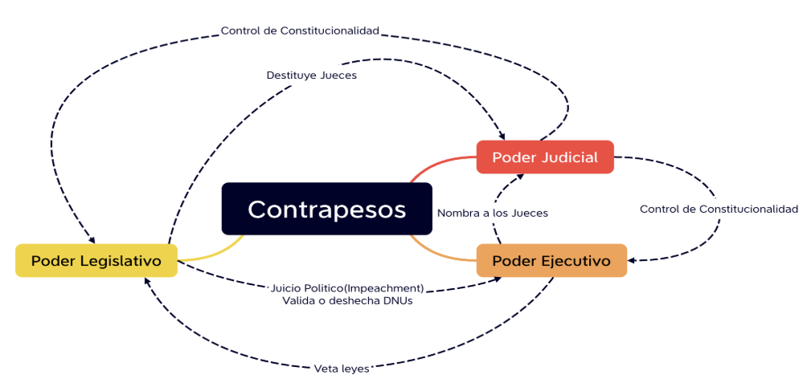
Pesos y contrapesos del sistema republicano
La forma republicana no se agota en dividir el poder en tres: cada poder controla a los otros dos.
| Poder | Controla a | Mecanismo |
|---|---|---|
| Legislativo | Ejecutivo | Juicio político; valida o desecha los DNU (decretos de necesidad y urgencia). |
| Judicial | Destituye jueces mediante juicio político. | |
| Ejecutivo | Legislativo | Veta leyes de forma total o parcial. |
| Judicial | Nombra a los jueces de la CSJN. | |
| Judicial | Legislativo | Control de constitucionalidad de las leyes (armonía con la CN). |
| Ejecutivo | Control de constitucionalidad de actos (legalidad de decretos y resoluciones). |
Fuentes del derecho
Las fuentes del derecho se dividen en dos grupos, según si producen una norma directamente aplicable o si solo orientan su interpretación:
| Tipo | Fuente | Qué aporta |
|---|---|---|
| Formales | Ley | Norma escrita; puede no bastar por su ambigüedad. |
| Usos, prácticas y costumbres jurídicas | Sin ley escrita de por medio, aplican en la práctica (por ejemplo, en contratos comerciales). | |
| Fallos plenarios | Decisiones de la CSJN que sientan precedente obligatorio. | |
| Materiales | Principios generales del derecho | Valores que inspiran el ordenamiento jurídico (buena fe, equidad, justicia). |
| Doctrina | Opiniones de juristas y académicos que interpretan y analizan las normas jurídicas. | |
| Derecho comparado | Análisis de sistemas jurídicos extranjeros para entender y mejorar el propio. | |
| Jurisprudencia (inter-partes) | Decisiones de tribunales inferiores que no sientan precedente obligatorio, pero pueden ser persuasivas. |
Prelación normativa (pirámide de Kelsen)
Las normas de un ordenamiento jurídico no tienen todas el mismo peso: se ordenan en una jerarquía donde una norma de rango inferior no puede contradecir a una de rango superior.
Constitucionalización del derecho privado
El derecho privado (civil y comercial) tiene que estar en armonía con los principios constitucionales: no se rige como una doctrina aparte, sino integrada al sistema constitucional.
Código Civil y Comercial, art. 1°: fuentes y aplicación
- El Código se rige por la Constitución Nacional y los tratados de derechos humanos en los que la Argentina sea parte.
- Considera la finalidad de la norma.
- Los usos, prácticas y costumbres son vinculantes cuando la ley o los interesados se refieren a ellos, o en situaciones no regladas legalmente.
Código Civil y Comercial, art. 2°: interpretación
La ley se interpreta teniendo en cuenta:
- Las palabras de la ley.
- Sus finalidades.
- Las leyes análogas.
- Las disposiciones de los tratados de derechos humanos.
- Los principios y valores jurídicos.
- La coherencia con todo el ordenamiento.
Código Civil y Comercial, art. 4°: ámbito subjetivo (obligatoriedad)
Las leyes son obligatorias para todos los habitantes: ciudadanos, extranjeros, residentes, domiciliados y transeúntes.
Fases del derecho
Derechos subjetivos patrimoniales
Derechos subjetivos extrapatrimoniales
Ejemplos: derechos personalísimos, derecho al ambiente sano, derechos de familia.
Principios del derecho para el ejercicio de los derechos
El Código Civil y Comercial fija un conjunto de principios generales que limitan cómo se ejercen los derechos:
El ordenamiento reconoce, por un lado, derechos individuales (salvo cuando su ejercicio pueda afectar al ambiente o a los derechos de incidencia colectiva en general) y, por otro, derechos de incidencia colectiva (el ambiente sano, los derechos de usuarios y consumidores, los derechos de grupos vulnerables).
Vínculos y actos jurídicos
Esta unidad cubre la mitad legal de la materia: qué es una relación jurídica y de qué elementos se compone, cómo se clasifican los hechos jurídicos hasta llegar al acto jurídico, qué convierte a un acto en voluntario y cómo se manifiesta esa voluntad, qué vicios pueden invalidar un acto jurídico, y cómo se estructuran las obligaciones que nacen de todo esto. Es la base conceptual para leer cualquier contrato o entender por qué un compromiso es exigible o nulo, algo central para quien monta una empresa de base tecnológica.
Relación jurídica
Toda relación jurídica se compone de cuatro elementos:
- Sujeto: las personas físicas o jurídicas que componen la relación.
- Objeto: los bienes o cosas que componen la relación, y la prestación que debe cumplir el deudor.
- Causa: el motivo o fin de donde surge la relación, la finalidad lícita perseguida por las partes.
- Contenido: los derechos y obligaciones de las partes, lo que cada sujeto debe hacer, dar o no hacer.
Tipos de relaciones jurídicas
| Tipo | Qué prioriza | Ejemplo |
|---|---|---|
| Obligacional | El deber de cumplir con los derechos de otro sujeto; el acreedor puede exigir el cumplimiento. | Devolución de un préstamo bancario. |
| Real | La relación del sujeto con un objeto; el derecho del propietario de disponer de sus bienes. | Derecho de propiedad. |
| Familiar | Los derechos propios de la institución familiar. | Alimentos entre parientes, matrimonio. |
| Hereditaria o sucesoria | Los sucesores de una persona fallecida. | Distribución de la herencia. |
| Laboral | El vínculo entre empleadores y empleados, regulado por el Derecho Laboral. | Contrato de trabajo. |
| Comercial | El vínculo entre comerciantes o empresas, regulado por el Derecho Comercial. | Contratos mercantiles. |
Hechos jurídicos
No todo hecho jurídico es igual: puede venir de la naturaleza o de una persona, y dentro de los hechos humanos hay una cadena de distinciones que termina en el acto jurídico, la categoría que más importa para el resto de la unidad.
| Delito | Cuasidelito | |
|---|---|---|
| Cuándo se configura | El daño se realiza de forma intencional. | El daño resulta de negligencia, imprudencia o impericia. |
| Elemento subjetivo | Dolo | Culpa |
Teoría de los actos voluntarios
Un acto voluntario es el que se ejecuta reuniendo tres condiciones internas y una externa. Si falta cualquiera de las internas, el acto es involuntario.
| Elemento | Condición | Qué exige | Cuándo falta |
|---|---|---|---|
| Discernimiento | Interna | Aptitud de analizar y evaluar un hecho y sus consecuencias. No es lo mismo que la capacidad. | Privación de la razón (intoxicación, enfermedad mental) o minoría de edad. |
| Intención | Interna | Determinación de llevar a cabo un acto con conocimiento de sus consecuencias. | No desarrollado en profundidad en esta unidad. |
| Libertad | Interna | Posibilidad de realizar un acto de acuerdo al propio deseo, sin coacción ni violencia. | No desarrollado en profundidad en esta unidad. |
| Manifestación externa | Externa | Manifestación del acto mediante un hecho exterior. | Sin manifestación externa no hay acto voluntario. |
Manifestación de la voluntad
La voluntad puede manifestarse de cuatro formas: oralmente, por escrito, por signos inequívocos o por la ejecución de un hecho material.
Regla general sobre el silencio: el silencio no es una manifestación de voluntad. La excepción aparece cuando existe un deber de expedirse, ya sea por ley, por voluntad de las partes o por los usos y prácticas.
Manifestación tácita: la manifestación de la voluntad puede ser expresa o tácita. Es tácita cuando resulta de actos por los cuales se puede conocer la voluntad con certidumbre, pero carece de eficacia cuando la ley exige una manifestación expresa.
Actos jurídicos
El acto jurídico (acto voluntario lícito que busca adquirir, modificar o extinguir relaciones jurídicas) se compone de cuatro elementos:
- Sujeto: las personas otorgantes del acto. Deben ser capaces de hecho y tener capacidad de ejercicio.
- Objeto: el hecho o cosa sobre la cual recae el acto. Debe ser material y jurídicamente posible, lícito, y determinado o determinable.
- Forma: el medio por el cual se manifiesta exteriormente la voluntad. Es formal si la ley establece cómo debe exteriorizarse, e informal cuando queda a elección de las partes.
- Causa: la finalidad perseguida por las partes al llevar a cabo el acto. Debe ser lícita.
Vicios del acto jurídico
| Vicio | En qué consiste | Detalle |
|---|---|---|
| Lesión | Aprovechamiento de la debilidad de la otra parte para obtener una ventaja excesiva. | Elemento subjetivo: aprovechamiento de la necesidad, inexperiencia o falta de juicio ajena. Elemento objetivo: desproporción económica notable y sin justificación. |
| Simulación | El acto declarado no es el que realmente ocurre. | Tiene todos los elementos de un acto jurídico para simular un acto real: no existe o es distinto del que se exterioriza. El propósito es engañar a terceros. |
| Fraude | El deudor realiza actos o renuncia a derechos para perjudicar a sus acreedores. | Requisitos: crédito anterior al acto, insolvencia causada o agravada por él, y conocimiento del tercero cuando el acto es oneroso. Ejemplo típico: vender bienes para vaciar el patrimonio y no pagar. También se lo llama Acción Revocatoria o Acción Pauliana. |
| Nulidad | Falta alguno de los elementos esenciales del acto jurídico. | Sanción legal que priva al acto de sus efectos normales. Es absoluta si contraviene el orden público (puede declararla un juez); es relativa si solo afecta intereses particulares (solo se declara a petición de parte). |
Obligaciones
Elementos de una obligación:
- Sujeto: el sujeto activo es el acreedor, quien tiene el derecho de exigir la prestación; el sujeto pasivo es el deudor, quien tiene el deber de cumplirla. Ambos deben tener aptitud para ser titulares de derechos y deberes jurídicos, y pueden ser plurales (desde el origen o de forma sobreviniente). Puede existir una doble condición de acreedor y deudor cuando hay obligaciones recíprocas, como en una compraventa.
- Prestación: debe ser material y jurídicamente posible, determinada o determinable, susceptible de valoración económica, y responde al interés patrimonial o extrapatrimonial del acreedor.
- Interés: la finalidad lícita, el objeto de la obligación. Puede ser patrimonial (susceptible de valoración económica) o extrapatrimonial (sin valor económico directo).
- Vínculo: la relación jurídica entre los sujetos.
Efectos de las obligaciones
| Efectos respecto del acreedor | Efectos respecto del deudor |
|---|---|
| Emplear los medios legales para que el deudor le procure lo obligado. Hacérselo procurar por otro a costa del deudor, si este no cumple. Obtener del deudor las indemnizaciones correspondientes por daños y perjuicios. Obtener el pago de las costas y honorarios profesionales por litigio o arbitraje. | Con el cumplimiento exacto de la obligación, tiene derecho a obtener la liberación de la obligación y a rechazar las acciones del acreedor, como reclamos injustificados. |
El cumplimiento se juega en dos instancias:
- Primera instancia: el deudor tiene el deber de pagar para satisfacer el interés del acreedor. Es el cumplimiento voluntario de la obligación.
- Segunda instancia: si no se verifica el pago, el acreedor puede obtener la satisfacción de ese interés de forma forzada, o por medio de una indemnización (daños y perjuicios).
Clasificación de las obligaciones
| Tipo | Qué exige |
|---|---|
| De dar | Su objeto consiste en la entrega de una cosa. |
| De hacer, de medios | Realizar cierta actividad con la diligencia apropiada, independientemente de su éxito. |
| De hacer, de resultado sin garantía | Procurar al acreedor cierto resultado concreto, con independencia de su eficacia. |
| De hacer, de resultado | Procurar al acreedor el resultado eficaz prometido. |
| De no hacer | El deudor debe abstenerse de realizar un acto que, de no existir la obligación, podría hacer. |
Modos de extinción de las obligaciones
| Modo | En qué consiste |
|---|---|
| Pago | El modo normal y principal de extinción. |
| Compensación | Hay reciprocidad de deuda entre las partes, y la obligación se extingue hasta el monto menor. |
| Confusión | Las calidades de acreedor y deudor se reúnen en una misma persona. |
| Novación | Se extingue una obligación por la creación de una nueva que la reemplaza. |
| Dación en pago | El acreedor acepta voluntariamente recibir una cosa distinta de la debida. |
| Renuncia y remisión | El acreedor abdica de su derecho de cobrar, o perdona la deuda. |
| Imposibilidad de cumplimiento | La prestación es objetivamente imposible de cumplir, sin que medie culpa del deudor. |
Contratos
Esta unidad cubre la base legal del contrato: qué es, el principio de autonomía de la voluntad que habilita a las partes a fijar sus propias reglas, los elementos que un contrato necesita para ser válido, quiénes se consideran parte de él, qué efectos produce y cómo se clasifica. Importa para una empresa de base tecnológica porque casi toda relación comercial (con clientes, proveedores, socios o empleados) se instrumenta mediante un contrato, y saber qué lo hace válido y qué alcance tiene evita errores costosos.
Concepto de contrato
Principio de la autonomía de la voluntad
La autonomía de la voluntad tiene base constitucional (arts. 14, 17 y 19 de la Constitución Nacional): los ciudadanos tienen la potestad de crear sus propias normas para autorregularse. De ahí se desprende la regla de que el contrato es ley entre las partes: lo pactado está para cumplirse, y las partes quedan obligadas a cumplirlo.
Esa libertad tiene un límite explícito:
- Orden público: no se puede contratar sobre algo prohibido por la ley.
Dentro de ese límite, las partes pueden determinar el contenido del contrato libremente. Las normas legales cumplen un rol distinto según su naturaleza:
- Aplicación supletoria: la ley suple lo que las partes no previeron en el contrato.
- Normas expresamente imperativas: son las únicas que se imponen por encima de lo pactado, incluso si las partes acordaron algo distinto.
Elementos del contrato
Para que un contrato sea válido, requiere estos elementos:
| Elemento | En qué consiste | Ejemplo |
|---|---|---|
| Consentimiento | Expresión explícita de voluntad de las partes. | Ambas partes firman el contrato de alquiler de una oficina. |
| Causa | Motivación de las partes para contratar. | Una empresa contrata un servicio de desarrollo para lanzar un producto. |
| Objeto | Debe ser lícito, posible, determinado (o determinable), susceptible de valoración económica y responder a un interés de las partes. | El servicio de desarrollo a prestar queda descripto y acotado en el contrato. |
| Forma | Rige la libertad de formas, excepto casos específicos: la escritura pública debe hacerse por escrito, y el instrumento privado requiere solemnidad absoluta. | La compraventa de un inmueble exige escritura pública; un contrato de servicios simple puede pactarse verbalmente. |
| Capacidad | Si falta capacidad en alguna de las partes, hay nulidad y el contrato no surte efecto. | Un contrato firmado por un menor de edad sin representación es nulo. |
Partes del contrato
Según el CCyC (art. 1023), se considera parte del contrato a quien:
- Lo otorga a nombre propio, aún en interés ajeno.
- Es representado por un otorgante.
- Manifiesta voluntad contractual, aunque esa voluntad sea transmitida por un corredor o un agente sin representación.
Efectos del contrato
- Efecto relativo (CCyC, art. 1021): el contrato solo produce efecto entre las partes contratantes, a diferencia de las leyes, que tienen efecto absoluto.
- Efecto vinculante (CCyC, art. 959): el contrato es obligatorio para las partes y solo puede modificarse o extinguirse por acuerdo de partes o por ley.
- Facultades de los jueces (CCyC, art. 960): los jueces no pueden modificar las estipulaciones de los contratos, salvo a pedido de una de las partes cuando la ley lo autoriza.
Clasificación de los contratos
| Criterio | Categoría | Descripción |
|---|---|---|
| Según las obligaciones | Unilaterales | Una sola parte se obliga (ejemplo: la donación). |
| Bilaterales | Obligaciones recíprocas entre las partes (la mayoría de los contratos). | |
| Plurilaterales | Intervienen más de dos partes con obligaciones entre sí (ejemplo: las sociedades). | |
| Gratuitos | No hay contraprestación dineraria (ejemplo: el comodato). | |
| Onerosos | Hay compensación dineraria (la mayoría de los contratos). | |
| Según su tipo | Nominados / típicos | Tienen tipificación legal, están regulados por el orden público y se interpretan de forma restrictiva. |
| Innominados / atípicos | No están regulados específicamente, aunque sigue rigiendo el orden público. | |
| Según su gestación | Paritarios | La totalidad del contrato se acuerda libremente entre las partes. |
| De adhesión | Hay cláusulas predispuestas por una parte que la otra se limita a aceptar. | |
| Según la relación | Civiles y comerciales | Se rigen por el régimen general del Código Civil y Comercial de la Nación. |
| De consumo | Una de las partes usa el bien o servicio para consumo propio, de su familia o de su grupo social; se rige por la Ley de Defensa del Consumidor. | |
| Laborales | Se rigen solamente por la Ley de Contratos de Trabajo. |
Sociedades
Esta unidad estudia a la sociedad como el vehículo jurídico más usado para emprender: qué leyes la rigen, qué atributos le da la personalidad jurídica, qué tipos societarios existen y en qué se diferencian (con foco en la responsabilidad de los socios y en cómo se administran, gobiernan y fiscalizan) y cómo es su ciclo de vida completo, desde la constitución hasta la extinción. Para quien monta una empresa de base tecnológica, elegir el tipo societario correcto define cuánto capital hace falta, quién responde si algo sale mal y qué tan rápido y barato es arrancar.
Qué es una sociedad
Su naturaleza es la de una persona jurídica privada: una ficción legal distinta de los socios que la integran, capaz de adquirir derechos y contraer obligaciones por sí misma. La sociedad modifica su propio patrimonio en la búsqueda de cumplir su objeto social.
(CCyC, art. 142) La existencia de la sociedad comienza con su constitución, es decir, al firmarse el estatuto o contrato social. No necesita autorización legal para funcionar, salvo las excepciones que la propia ley establezca.
Leyes aplicables a las sociedades
Qué normas rigen a una sociedad depende de dónde se constituyó:
| Sociedad | Orden de aplicación de las normas |
|---|---|
| Constituida en el país | 1) Normas imperativas de la ley especial y del CCyC. 2) Normas del acto constitutivo y sus modificaciones, y del reglamento. 3) Normas supletorias de leyes especiales y del CCyC. |
| Constituida en el extranjero | Solo la Ley General de Sociedades (LGS). |
Atributos de la personalidad jurídica
El CCyC le reconoce a toda persona jurídica (y por lo tanto a la sociedad) cinco atributos:
- Nombre (CCyC, art. 151): razón social que la identifica de forma inequívoca. Debe ser veraz, novedoso y distintivo.
- Patrimonio (CCyC, art. 154): tiene patrimonio propio, distinto del de los socios, y puede inscribir preventivamente a su nombre los bienes registrables.
- Domicilio y sede social (CCyC, art. 152): es el fijado en el estatuto o en la autorización otorgada para funcionar. Cambiarlo exige modificar el estatuto. Si la sociedad tiene varias sucursales, cada una puede considerarse domicilio especial, pero solo para las obligaciones contraídas allí.
- Duración (CCyC, art. 155): es ilimitada en el tiempo, salvo que la ley o el estatuto dispongan lo contrario.
- Objeto (CCyC, art. 156): debe ser preciso y determinado.
Tipos societarios
La LGS clasifica a las sociedades en tres grandes grupos, según cómo se divide y se transmite el capital:
- Sociedades de personas (personalistas, o por partes de interés): sociedad colectiva, sociedad en comandita simple y sociedad de capital e industria.
- Sociedades mixtas (o por cuotas): Sociedad de Responsabilidad Limitada (S.R.L.).
- Sociedades de capital (o por acciones): Sociedad Anónima (S.A.), sociedad en comandita por acciones (S.C.A.) y Sociedad por Acciones Simplificada (S.A.S.).
Sociedad de Responsabilidad Limitada (S.R.L.)
Perfil: ideal para PyMEs y empresas familiares. Combina la simplicidad de su regulación con la limitación de responsabilidad.
- Capital: se divide en cuotas, donde cada una da derecho a un voto y se pueden ceder.
- Socios: tiene un máximo de 50 socios.
- Administración y representación: la Gerencia, con uno o más gerentes que pueden durar en el cargo de forma indefinida.
- Gobierno: la Reunión de Socios o la Asamblea.
- Fiscalización: los socios individualmente, o una Sindicatura.
Sociedad Anónima (S.A.)
Perfil: pensada para las grandes empresas. Su constitución es más costosa, tiene más requisitos y está sujeta a mayores controles. Puede cotizar en bolsa.
- Capital: se divide en acciones. La ley exige un capital mínimo de AR$ 100.000 (la IGJ puede pedir más según el objeto social). Puede tener distintas clases de acciones, con distintos derechos.
- Socios: permite muchos socios. La responsabilidad de cada uno se limita a sus aportes.
- Administración: el Directorio (uno o más miembros, socios o no). Es un órgano permanente elegido por la Asamblea, con duración máxima de 3 años (reelegibles).
- Representación: el Presidente del Directorio, quien rinde cuentas al Directorio y a los accionistas.
- Gobierno: la Asamblea de accionistas (órgano no permanente, reunido por convocatoria previa), cuyas decisiones son obligatorias para todos los socios. Las Asambleas Ordinarias son anuales: aprueban el balance y deciden directores, distribución de dividendos y aumentos de capital. Las Asambleas Extraordinarias se convocan con un orden del día específico, para tratar cualquier otro asunto.
- Fiscalización: la Sindicatura, formada por abogados o contadores elegidos por los accionistas. Es obligatoria si el capital social supera los 50 millones o si la sociedad cotiza en bolsa.
Sociedad por Acciones Simplificada (S.A.S.)
Perfil: creada por la Ley de Apoyo al Capital Emprendedor. Se destaca por su rapidez: constitución digital, CUIT en 24 horas y libros digitales. No puede tratarse de una sociedad de economía mixta, de servicios públicos, ni de una entidad financiera.
- Capital: se divide en acciones. El mínimo equivale a 2 Salarios Mínimos Vitales y Móviles.
- Administración y representación: el Órgano de Administración, con un plazo en el cargo que puede ser indeterminado.
- Gobierno: la Reunión de Socios.
- Fiscalización: es optativo tener un órgano de fiscalización.
Comparativa de los tipos con responsabilidad limitada
| S.R.L. | S.A. | S.A.S. | |
|---|---|---|---|
| Perfil | PyMEs y empresas familiares | Grandes empresas, puede cotizar en bolsa | Emprendimientos, constitución rápida y digital |
| Capital mínimo | Sin mínimo legal, dividido en cuotas | AR$ 100.000, dividido en acciones (la IGJ puede exigir más) | 2 Salarios Mínimos Vitales y Móviles, dividido en acciones |
| Responsabilidad de los socios | Limitada al capital aportado | Limitada al capital aportado | Limitada al capital aportado |
| Administración | Gerencia (1 o más gerentes, plazo indefinido posible) | Directorio (1 o más miembros, hasta 3 años, reelegible) | Órgano de Administración (plazo indeterminado posible) |
| Representación | Gerencia | Presidente del Directorio | Órgano de Administración |
| Gobierno | Reunión de Socios o Asamblea | Asamblea de accionistas (ordinaria y extraordinaria) | Reunión de Socios |
| Fiscalización | Socios individualmente, o Sindicatura | Sindicatura (obligatoria si el capital supera los 50 millones o cotiza en bolsa) | Optativa |
La fuente no detalla en profundidad la estructura interna (capital mínimo, órganos de administración y gobierno) de la sociedad colectiva, la comandita simple, la capital e industria ni la comandita por acciones (S.C.A.): alcanza con ubicarlas en la clasificación y con saber que, a diferencia de la S.R.L., la S.A. y la S.A.S., no gozan de responsabilidad limitada plena para todos sus socios.
Vida de la sociedad
Toda sociedad atraviesa un ciclo que va desde su constitución hasta su extinción. El contrato o estatuto social, firmado en la constitución, tiene que contener:
- Los datos de los socios.
- La razón social o denominación, y el domicilio.
- El objeto social.
- El capital social.
- El plazo de duración.
- La organización de la administración y de la fiscalización.
- Las reglas de distribución de utilidades y pérdidas (proporcionales a los aportes).
- Las cláusulas de funcionamiento y de liquidación.
Estados contables de la sociedad
Toda sociedad rinde cuentas de su gestión a través de estados contables. Existen distintas clases de balances, según su obligatoriedad y su destinatario:
- Balance de ejercicio: obligatorio para todas las sociedades. Se compone de estados contables básicos, notas y cuadros anexos, el informe del auditor, el informe del síndico y la memoria del directorio.
- Balances especiales: se confeccionan por razones específicas (por ejemplo, fusiones o cambios de tipo societario).
- Balances trimestrales: exigidos a las sociedades que cotizan en bolsa.
- Balances consolidados: exigidos a los grupos económicos, que suman los estados de todas las sociedades del grupo.
Socios
(LGS, art. 36) Los derechos y obligaciones de los socios empiezan a regir desde la fecha fijada en el contrato de sociedad.
- Derechos:
- Participar en las utilidades (dividendos) de los balances aprobados.
- Recibir la cuota de liquidación al disolverse la sociedad.
- Participar en el gobierno y el control de la sociedad (voz y voto).
- Derecho de información: revisar los libros sociales.
- Obligaciones:
- Realizar los aportes comprometidos.
- Ejercer el gobierno participando en las asambleas.
- Soportar las pérdidas de la sociedad.
- Actuar con deber de lealtad.
Regímenes de promoción
Un régimen de promoción es la herramienta que usa el Estado para favorecer, con incentivos concretos, el desarrollo de un sector productivo. Para una empresa de base tecnológica esto no es un detalle administrativo: acceder o no a un régimen cambia la carga tributaria, el costo laboral y hasta la viabilidad del negocio. Esta unidad ve los conceptos generales de estos regímenes y después entra en profundidad en el caso más relevante para el sector, el Régimen de Promoción de la Economía del Conocimiento (Ley 27.506): qué actividades cubre, qué requisitos hay que cumplir para entrar y para mantenerse dentro, qué beneficios otorga y qué pasa si se incumple.
Conceptos generales
- Objetivo: hacer al sector más competitivo, actuando sobre costos, beneficios impositivos y logística.
- Temporalidad: todo régimen debe tener un tiempo máximo de duración, para evitar que las empresas se conviertan en rent-seekers (buscadoras de rentas sin aportar valor real).
- Evolución: los regímenes pasaron de una lógica puramente industrial a una de desarrollo productivo, que hoy incluye también servicios y ciencia.
Beneficios generales típicos
Antes de ver el caso particular de la economía del conocimiento, conviene tener presente el menú típico de beneficios que ofrece cualquier régimen de promoción:
- Bonos de crédito fiscal nominativos y transferibles, para pagar impuestos como Ganancias o IVA.
- Descuentos directos en impuestos (inmobiliario, sellos).
- Amortización acelerada en el Impuesto a las Ganancias.
- Devolución anticipada de IVA en bienes de capital.
Régimen de Promoción de la Economía del Conocimiento (Ley 27.506)
Marco normativo
| Norma | Rol |
|---|---|
| Ley 27.506 | Ley principal: crea el régimen. |
| Ley 27.570 | Modificatoria de la Ley 27.506. |
| Ley 25.922 (Ley de Software) | Antecedente directo del régimen actual. |
La ley no define explícitamente una autoridad de aplicación: es el Poder Ejecutivo quien la designa. Hoy ese rol lo cumple la Secretaría de Conocimiento, dentro del Ministerio de Economía (antes lo ejercía la Secretaría Pyme, SEPYME).
Objeto de la ley
(Art. 1) Promocionar actividades económicas que apliquen el uso del conocimiento y la digitalización, apoyadas en avances de ciencia y tecnología, para la obtención de bienes y servicios y/o mejoras de procesos.
Actividades promovidas
(Art. 2) El régimen incluye, entre otros, los siguientes rubros:
- Software y servicios informáticos.
- Producción audiovisual.
- Biotecnología, bioinformática, ingeniería genética.
- Servicios geológicos y relacionados con la electrónica.
- Nanotecnología y nanociencia.
- Industria aeroespacial y satelital.
- Industria nuclear.
- Industria 4.0 (automatización, robótica).
- Servicios profesionales exportables, de publicidad, de arquitectura, diseño y marketing.
- Ciencias agropecuarias y médicas.
(Art. 2) La autoridad de aplicación dicta normas aclaratorias para precisar el alcance técnico de las actividades y rubros, y el Poder Ejecutivo puede ampliarlos en virtud de tecnologías emergentes.
Requisitos de acceso y permanencia
(Art. 3) Se crea el Registro Nacional de Beneficiarios, donde deben inscribirse quienes deseen acceder al régimen. (Art. 4) Es esa misma norma la que describe los requisitos de inscripción y de revalidación para los sujetos alcanzados.
Requisitos de acceso
| Requisito | Detalle |
|---|---|
| Sujetos alcanzados | Personas jurídicas constituidas en Argentina, o habilitadas para actuar en el país. |
| Libre deuda | Curso normal de cumplimiento de las obligaciones fiscales, laborales, gremiales y previsionales. |
| Actividad principal | Deben desarrollar como actividad principal alguna de las listadas en el artículo 2. |
| Facturación | El 70% de la facturación total del último año debe provenir de las actividades promovidas. Si aún no factura, debe acreditar fehacientemente el desarrollo de esas actividades. |
| Requisitos adicionales | Debe cumplir al menos 2 de los 3 requisitos adicionales (calidad, inversión, exportaciones), detallados abajo. |
Los tres requisitos adicionales, de los que hay que cumplir dos:
- Calidad: contar con normas de calidad reconocidas o con planes de mejora continúa.
- Inversión: en capacitación y/o en I+D (Investigación y Desarrollo), según los porcentajes de la tabla siguiente.
- Exportaciones: un porcentaje mínimo de la facturación total proveniente de exportaciones, también según el tamaño de la empresa.
| Requisito adicional | Base de cálculo | Micro | PyME | Grande |
|---|---|---|---|---|
| Capacitación | % de la masa salarial | 1% | 2% | 5% |
| I+D | % de la facturación | 1% | 2% | 3% |
| Exportaciones | % de la facturación total | 4% | 10% | 13% |
El porcentaje de capacitación se computa doble si se capacita a grupos vulnerables.
Requisitos de permanencia
El régimen exige una revalidación bianual, que verifica:
- Curso normal de cumplimiento de las obligaciones fiscales, laborales, gremiales y previsionales.
- Mantenimiento o incremento de la nómina de personal respecto de la declarada.
- Continuidad en el cumplimiento de las exigencias sobre actividades promovidas, con un incremento en los porcentajes de los requisitos adicionales.
Además de la revalidación bianual, puede haber controles anuales sobre la nómina de personal, y auditorías para verificar que todo lo declarado sea real.
Beneficios específicos
| Artículo | Beneficio | Detalle |
|---|---|---|
| Art. 7 | Estabilidad fiscal | Previsibilidad en el mantenimiento de los beneficios otorgados durante la vigencia del régimen. |
| Art. 8 | Bono de crédito fiscal | Equivalente a hasta el 70% de las contribuciones patronales pagadas. Es nominativo e intransferible: se usa para pagar IVA u otros impuestos federales, y Ganancias solo si la empresa exporta. |
| Art. 9 | Bono adicional | El porcentaje del artículo 8 sube hasta el 80% si se contrata mujeres, personas trans, personas con discapacidad, beneficiarios de planes sociales, entre otros grupos. |
| Art. 10 | Reducción en Impuesto a las Ganancias | Reducción en la alícuota: 60% para Micro, 40% para PyMEs, 20% para Grandes. |
| Art. 11 | Derechos de exportación | 0% para exportaciones de servicios (porcentaje fijado por decreto). |
| Art. 12 | No retención de IVA | Exclusión de los regímenes de retención y percepción de IVA para los exportadores del régimen. |
Régimen sancionatorio
(Art. 15) El incumplimiento o la falsedad en la información declarada puede derivar en:
- Suspensión: de 3 a 12 meses sin goce de beneficios.
- Baja y revocación: expulsión del régimen.
- Multas: de hasta el 100% del beneficio otorgado.
- Devolución: reintegro de los bonos recibidos y pago de los tributos no ingresados, con intereses.
- Inhabilitación: imposibilidad de volver a inscribirse en el régimen.
(Art. 15 bis) Existen además causales de decaimiento automático, que hacen caer al beneficiario del régimen sin necesidad de un proceso sancionatorio previo:
- Reducción de personal sin reponerlo dentro de los 60 días.
- Detección de trabajadores no registrados (en negro).
- Inclusión en el REPSAL (Registro Público de Empleadores con Sanciones Laborales).
- Verificación de prácticas fraudulentas para la obtención del beneficio.
Derecho laboral
La mitad de derecho cierra con la rama que regula el trabajo en relación de dependencia. El derecho laboral parte de una desigualdad de hecho entre empleador y trabajador y la compensa con el principio protectorio, del que se derivan reglas que no existen en el derecho privado. Este capítulo recorre esos principios, el contrato de trabajo y las tres dependencias que prueban su existencia, los derechos y deberes de cada parte, la estabilidad, las jornadas y descansos, la remuneración y los principios de la seguridad social.
Principio protectorio al trabajador: se lo entiende como vulnerable por su carácter de dependencia, habiendo una desigualdad de hecho.
Fuentes de regulación
- Ley y estatutos
- Convenios colectivos
- Voluntad de las partes
- Usos y costumbres
Principios del derecho laboral
| Principio | Qué establece |
|---|---|
| Norma más favorable | Ante el análisis de una situación, se toma como referencia la norma que más favorezca al trabajador (a diferencia del derecho privado, que tiene una jerarquía de normas) |
| Irrenunciabilidad de los derechos | Todo acuerdo entre partes en el que el trabajador renuncie a sus derechos otorgados por ley será considerado nulo |
| Primacía de la realidad | Será nulo todo contrato en el que las partes hayan procedido con simulación o fraude a la ley laboral, sea aparentando normas contractuales no laborales, interposición de personas o cualquier otro medio. La relación quedará regida por esta ley |
| Continuidad | Preservación del vínculo más allá de los avatares del paso del tiempo |
| Estabilidad | Firmeza y solidez del vínculo |
Contrato de trabajo
- Partes: empleador y trabajador
- Requisitos: consentimiento, capacidad, objeto, forma
- Características: consensual, personal, de trato sucesivo, no formal, oneroso
Requisitos
- Las partes deben estar de acuerdo, expresando su voluntad
- La actividad debe ser lícita
- Quien presta los servicios debe ser una persona física en todos los casos
- El trabajo debe beneficiar al empleador, poniendo a disposición su fuerza laboral
- Remuneración en función de la cantidad y calidad
- Contrato temporalmente flexible
- Relación de carácter personal para el trabajador
Existencia material del contrato de trabajo
Si se cumplen estas tres dependencias, la ley considera que existe un vínculo que se rige bajo un contrato de trabajo:
| Dependencia | En qué consiste |
|---|---|
| Económica | El trabajador depende económicamente del empleador ($) |
| Técnica | Las decisiones técnicas las pone el empleador |
| Jurídica | El empleador aplica sanciones |
Empleador
Debe cumplir con el principio de lealtad y buena fe.
Derechos del empleador
- Organización
- Dirección
- Reglamentación
- Disciplina
- Controles personales
- Controles médicos
- Preferencia en la explotación de inventos personales
- Ius variandi: facultad de variar las condiciones del contrato
Deberes del empleador
- Pago de remuneración
- Previsión: seguridad y salud; seguridad patrimonial (gastos del trabajador)
- Dar ocupación efectiva con tareas adecuadas a la posición del trabajador
- Diligencia e iniciativa
- Obligaciones frente a organismos de seguridad social y sindicales
- Razonabilidad
- Inalterabilidad de los elementos esenciales del contrato
- Indemnidad del trabajador
Trabajador
Debe cumplir con el principio de lealtad y buena fe.
Derechos del trabajador
- Remuneración
- Seguridad y condiciones dignas de trabajo
- Ocupación efectiva
- Libre expresión y dignidad
- Reconocimiento de propiedad de invenciones personales
- No modificación de condiciones esenciales del trabajo
- Impugnación de sanciones
- Ingreso de aportes
Deberes del trabajador
- Diligencia y colaboración
- Fidelidad
- Obediencia
Estabilidad de la relación laboral
| Tipo | Subtipo | En qué consiste |
|---|---|---|
| Estabilidad propia | Absoluta | Sistema de los empleados públicos de planta permanente: garantiza la reinstalación en caso de declararse judicialmente la invalidez de la desvinculación |
| Relativa | Aun cuando se pueda ordenar la reinstalación, el empleador puede rehusarse a aceptarla y continuar pagando los sustitutos del salario, o el trabajador puede optar por considerarse despedido con una indemnización especial | |
| Estabilidad impropia | El despido sin causa es eficaz pero ilegítimo (corresponde indemnización) |
Modalidades de contratación
- Tiempo indeterminado (regla general)
- Plazo fijo
- Temporada
- Eventual
- Part-time
Jornadas
Horas extra
Califica como hora extra si se sobrepasan las 9 hs diarias o las 48 hs semanales de trabajo.
| Recargo | Cuándo |
|---|---|
| 50% más | Un día de semana, o sábado antes de las 13 hs |
| 100% más | Sábado después de las 13 hs, domingos y feriados |
El trabajador no está obligado a trabajar horas extras, a menos que peligre la integridad del empleo por accidentes o casos críticos.
Descansos
- Mínimo 12 hs entre jornadas
- Descanso semanal entre las 13 hs del sábado y las 00 hs del lunes
- Mujeres y niños: pausa de 2 horas
- Mujeres lactantes: 2 descansos acumulables de 30 minutos
- Anual: vacaciones
Remuneración
- Debe ser justa; hay un mínimo (SMVM)
- Remuneración igual por la misma tarea
- Se puede fijar por tiempo o por rendimiento de trabajo
- Como mucho se puede pagar el 20% del sueldo en especies (no dinero)
- Aguinaldo
Seguridad social
| Principio | Qué establece |
|---|---|
| Solidaridad | Toda la población, en la medida de sus posibilidades, debe contribuir económicamente al financiamiento de la protección. Sacrificios individuales |
| Subsidiariedad | Busca reforzar a un sector que sufre contingencias |
| Universalidad | Aplicable a toda la comunidad. No es un sistema clasista o exclusivo |
| Igualdad | Misma cobertura a todos los que están en iguales condiciones |
| Unidad de gestión | Criterios congruentes y coordinados en el otorgamiento de las prestaciones. Única estructura administrativa y financiera |
Repaso final y machete
El mínimo indispensable para aprobar los parciales y el final: definiciones exactas, clasificaciones y fórmulas, sin relleno. Cada sección condensa un tema del apunte; el desarrollo completo, con ejemplos y diagramas, está en los capítulos anteriores. Al final, el machete: todas las fórmulas, los números que hay que saber de memoria y las definiciones que se piden textuales.
Cómo usar este repaso
Tres capas, en este orden:
- Definiciones exactas: la cátedra puntúa las palabras precisas. Están en los recuadros.
- Clasificaciones: casi toda pregunta teórica es «enumerá y diferenciá». Están en las tablas.
- Fórmulas: todas juntas en el machete del final.
Economía
- Tipos de economía: capitalista (deciden privados), de Estado (decide el gobierno), mixta.
- Micro: agentes individuales (personas, familias, organizaciones). Macro: variables agregadas (PBI, inflación, empleo, tasa de interés, deuda).
- Costo de oportunidad: cantidad de otros bienes a la que se renuncia para obtener otro.
- FPP: óptimo posible entre dos bienes. Todos los puntos sobre la curva son igualmente eficientes. Se desplaza con capital, fuerza laboral, mejora tecnológica o nuevos recursos. Sin escasez no habría FPP.
| Factor de producción | Remuneración |
|---|---|
| Tierra | Renta |
| Trabajo | Salario |
| Capital | Interés |
| Capacidad empresarial / estadual | Beneficio |
- PBI: suma de todos los bienes y servicios producidos en una economía en un período. Nominal (precios corrientes) no contempla inflación; real (precios constantes) toma un período base.
- Demanda vs. cantidad demandada: la demanda es toda la curva; la cantidad demandada es un punto. Ídem oferta.
- Ley de demanda: precio ↑ → demanda ↓ (inversa). Ley de oferta: precio ↑ → oferta ↑ (directa).
- Elasticidad: sensibilidad de una variable respecto de otra. Se toma en valor absoluto.
| Elasticidad demanda | Ep | Ejemplo |
|---|---|---|
| Perfectamente inelástica | 0 | Pan |
| Inelástica | >0 y <1 | Electricidad |
| Unitaria | 1 | Casos particulares |
| Elástica | >1 y <∞ | Pasajes de avión, golosinas |
| Perfectamente elástica | ∞ | Frutas y verduras (ideal) |
| Comp. perfecta | Monopolio | Oligopolio | Comp. monopólica | |
|---|---|---|---|---|
| Empresas | Muchas | Una | Pocas | Muchas |
| Información | Perfecta | Perfecta | Imperfecta | Imperfecta |
| Bien | Homogéneo | Uno solo | Homog. o diferenc. | Diferenciado |
| Barreras | No hay | Patentes, monopolio natural | Inversiones, ventaja costos | Bajas |
| Influye precio | No | Muchísima | Mucha | Poca |
Finanzas y contabilidad
- Hecho económico: todo hecho que modifica el patrimonio.
- Patrimonio: totalidad de lo que posee un ente (bienes, derechos y obligaciones).
- Balance: estado patrimonial en un período. A = P + PN.
- Cuadro de resultado (P&L): ganancias y pérdidas del período; se arma con las cuentas transitorias; su resultado es utilidades.
- EBITDA = utilidad de explotación; EBIT = utilidad operativa.
| Cuenta | Qué es | Corriente | No corriente |
|---|---|---|---|
| Activo | Bienes y derechos | Caja, banco, créditos, bienes de cambio | Bienes de uso, amortizaciones acumuladas, cargos diferidos |
| Pasivo | Obligaciones hacia terceros | Deudas (bancarias, fiscales, comerciales), provisiones, previsiones | Deudas, provisiones y previsiones NC |
| PN | Obligaciones hacia socios | Capital; reservas (legal, especial, estatutaria, facultativa); resultados | |
- Libro diario: hechos económicos del día a día, en orden cronológico.
- Libro mayor: movimientos de cada cuenta por separado; sirve para conocer el saldo.
- Plan de cuentas: ordenamiento sistemático de las cuentas. Manual: plan + análisis detallado de cada una.
Costos y rentabilidad
| Dimensión | Tipos | Ejemplos |
|---|---|---|
| De producción | Variables, fijos, mixtos | Publicidad, alquiler, energía eléctrica |
| De producto/servicio | Directos, indirectos | Materia prima y mano de obra; electricidad y refrigeración |
| De actividad | Producción, operación | Licencias de desarrollo; salario de atención al cliente |
| De acumulación | Órdenes de trabajo (demanda antecede), proceso (oferta antecede) | Reparar un auto; fabricar el auto |
| De tiempo | Históricos, reales, predeterminados | Pasado; período actual; proyectados |
- Triángulo de hierro: alcance, coste y tiempo, con la calidad en el centro.
- Objeto de costo: la causa que provoca el costo.
- Costo vs. inversión: costo = inversión de corto plazo; inversión = costo de largo plazo.
- Valor = estimación; precio = importe; costo = dinero erogado para producir.
- Amortización: económica = pérdida de valor de un bien de uso por tiempo o uso; financiera = pago periódico de un préstamo. Se descuenta de la utilidad antes de calcular Ganancias (pautas AFIP).
Valor, dinero e inflación
- Primarias: logística interna, operaciones, logística externa, marketing y ventas, servicios. De apoyo: infraestructura, RRHH, desarrollo tecnológico, adquisiciones. A la derecha, el margen.
- Estrategias: liderazgo en costos, diferenciación, enfoque.
- Sistema de valor: interconexión entre las cadenas de valor de varias empresas.
- Cuello de botella: restricción que ralentiza o detiene el flujo. Siempre existen; hay que identificarlos y decidir si aceptamos que marquen el ritmo.
- Valor agregado: diferencia entre el valor de los insumos y el valor del producto final. Tipos: funcional, emocional, estético.
- Las EBT ofrecen alto valor agregado por innovación tecnológica, problemas complejos, escalabilidad, innovación continua, PI y patentes, ecosistemas tecnológicos.
| Incubadora | Aceleradora | |
|---|---|---|
| Etapa | Temprana, validación de ideas | Crecimiento y escalabilidad |
| Duración | Larga, puede durar años | 3 a 6 meses, intensivo |
| Enfoque | Validar ideas, MVP | Escalar, obtener financiamiento |
| Inversión | No financia directamente | Capital semilla a cambio de participación |
| Espacio físico | Oficinas y recursos compartidos | Suele no dar espacio permanente |
TRL (9 niveles): 1-3 Research (principios básicos → concepto formulado → prueba de concepto); 4-6 Development (validado en lab → validado en entorno relevante → demostrado en entorno relevante); 7-9 Deployment (prototipo en entorno operativo → sistema completo y calificado → sistema real probado).
- 3 funciones: medio de pago, unidad de cuenta, depósito de valor.
- 3 características: liquidez, rendimiento, riesgo.
- 3 motivos de demanda de dinero: transacciones, precaución, especulación.
| Agregado | Fórmula |
|---|---|
| BM Base Monetaria | C + R |
| M Oferta Monetaria | C + D |
| M1 | C + CC |
| M2 | M1 + CA + PF < 1 año |
| M3 | M2 + PF > 1 año |
- Magnitud: baja <10% anual, media 10-20% anual, alta >20% anual, hiperinflación >50% mensual durante 3 meses consecutivos.
- Tipos: de demanda, de costos, inercial o por expectativas (profecía autocumplida), estructural (cuellos de botella), por política monetaria.
- Soluciones: pacto social, corregir precios relativos, metas reales, evitar fluctuación del tipo de cambio, subir tasas, moderar emisión.
Proyección financiera
Anualidad: sólo si el flujo cumple las 4 condiciones: cuotas iguales, misma distancia temporal, mismo signo, mismas tasas.
| Sistema | Cuota | Interés | Amortización | Refinanciar |
|---|---|---|---|---|
| Francés | Constante | Decreciente | Creciente | En desventaja |
| Alemán | Decreciente | Decreciente | Constante | Mejor que el francés |
| Bullet | Constante (sólo interés) | Constante | Toda en la última cuota | Peor escenario |
| Directo | Constante | Constante (sobre deuda original) | Constante | El más costoso |
- VAN: se descuenta contra la TREMA (Tasa Requerida Mínima Aceptable). Aceptar un proyecto beneficioso aumenta el valor de la empresa.
- KTOP = ACO − PCO. El activo corriente operativo excluye caja, bancos e inversiones; el pasivo corriente operativo excluye préstamos financieros y deudas bancarias.
- Cashflow: mide movimientos en efectivo. Evita el quiebre o bache de caja. Condiciones: valores en efectivo, en la fecha del movimiento, y marginales (sólo los del proyecto). Enfoques: descendente, ascendente, fiscal.
- Bonos: renta fija, promesa conocida de antemano. Pasivo del emisor, activo del comprador. Cláusulas: rescatables, convertibles, exentos de impuestos.
- Duration: distancia entre el instante de análisis y el baricentro de los ingresos del bono. D corta si querés liquidez; D larga si la tasa va a bajar.
- Acciones: renta variable, depende de la performance de la empresa. Dan derecho a votar en la junta.
Derecho
- Sistema argentino: representativo (elección de representantes), republicano (división de poderes horizontal), federal (división vertical: Nación, provincias, ciudad).
- Poderes: Legislativo discute y aprueba leyes (colegiado y bicameral); Ejecutivo administra, reglamenta y aplica (unipersonal); Judicial garantiza el cumplimiento (Corte Suprema, tribunales federales, cámaras).
- Fuentes formales: leyes, praeter legem (usos y costumbres), fallos plenarios.
- Fuentes materiales: principios generales, doctrina, derecho comparado, jurisprudencia.
- Jerarquía: 1) Constitución Nacional y Tratados de DDII, 2) leyes nacionales, 3) leyes provinciales, 4) otras legislaciones, 5) normas.
- Derecho privado: de las personas (general, familia, sucesiones) y patrimonial (reales, contratos, obligaciones).
- Constitucionalización: el CCyC debe estar en armonía con los principios constitucionales. Fase objetiva (prevenir y resolver conflictos) y subjetiva (derechos patrimoniales y extrapatrimoniales).
- Principios: buena fe, abuso del derecho, abuso de posición dominante (Defensa de la Competencia), orden público (salario mínimo), prohibición de renuncia general de leyes, derechos individuales, derechos de incidencia colectiva.
Vínculo jurídico
Componentes: sujeto, objeto, causa, contenido. Tipos: obligacional, real, familiar, hereditario, laboral, comercial.
- Acto voluntario sólo si hay discernimiento, razón (intención) y libertad.
- Manifestación de voluntad: oral o escrito, signos inequívocos, ejecución de hecho material (Teoría de los Actos Propios).
- ¿El silencio manifiesta voluntad? NO, salvo que exista obligación de expedirse.
- Elementos del acto: sujeto (capaz), objeto (sin prohibición legal), forma, causa.
- Vicios: lesión, simulación, fraude, nulidad.
- Elementos: sujetos, prestación, interés, vínculo. El deudor se libera cumpliendo exactamente lo pactado.
- Clasificación: de dar, de hacer (diligencia apropiada, resultado concreto, resultado eficaz prometido), de no hacer.
- 7 modos de extinción: pago, compensación, confusión, novación, dación de pago, renuncia y remisión, imposibilidad de cumplimiento.
Contratos
- Autonomía de la voluntad: potestad de crear normas propias, limitada por el orden público. Aplicación supletoria de normas legales; interpretación restrictiva.
- 5 elementos: consentimiento, causa, objeto, forma (libertad de forma) y capacidad (su ausencia genera nulidad).
- 3 efectos: relativo (sólo entre partes), vinculante (obligatorio), y el juez NO puede modificar el contrato.
| Criterio | Clases |
|---|---|
| Según obligación | Unilateral (donación), bilateral (compra), plurilateral (sociedades); además gratuitos (préstamo de uso) u onerosos |
| Según tipo | Nominados o típicos (regulados); innominados o atípicos (no regulados) |
| Según gestión | Paritarios (acuerdo libre); de adhesión (una parte propone, la otra acepta o rechaza) |
| Según relación | Civiles y comerciales, de consumo, laborales |
Sociedades
- La sociedad es una ficción legal: persona jurídica a la que la ley le confiere personalidad.
- Nace desde su constitución; no necesita autorización legal salvo disposición en contrario.
- Atributos: nombre, patrimonio, domicilio y sede social, duración, objeto.
- Clasificación: de Personas (colectiva, comandita simple, capital e industria), mixta (SRL), de capital (SA, comandita por acciones, SAS).
- Actos no inscriptos: inoponibles a terceros.
- Estados contables: de ejercicio (todas), especiales (según necesidad), trimestrales (cotizan en bolsa), consolidados (grupos económicos).
- Socios, derechos: dividendos, cuota de liquidación, manejo y control, información. Obligaciones: aportes, ejercicio de gobierno, soporte de pérdidas, deber de lealtad.
| SRL | SA | SAS | |
|---|---|---|---|
| Para | PYMEs y familiares | Grandes empresas | Capital emprendedor |
| Administración | Gerencia | Directorio (máx. 3 años, reelegible) | Órgano de Administración (plazo indeterminado) |
| Representación | Gerencia | Presidente del directorio | Órgano de Administración |
| Gobierno | Reunión de socios / Asamblea | Reunión de accionistas (no permanente) | Reunión de socios |
| Fiscalización | Socios / Sindicatura | Sindicatura obligatoria si +50M | Optativa |
| Capital mínimo | No exige | AR$ 100.000 (LGS) | 2 SMVM |
| Socios | Máx. 50 | Sin tope | Sin tope |
| Bolsa | No | Sí | No |
Asambleas (SA): ordinarias = anuales, aprueban balance y gestión; extraordinarias = cualquier otro asunto.
Derecho laboral
- Norma más favorable: se aplica la que más favorezca al trabajador, a diferencia del derecho privado, que usa jerarquía de normas.
- Irrenunciabilidad: todo acuerdo donde el trabajador renuncie a derechos de ley es nulo.
- Primacía de la realidad: es nulo todo contrato con simulación o fraude a la ley laboral; la relación queda regida por la LCT.
- Continuidad (preservación del vínculo) y estabilidad (firmeza y solidez).
- Fuentes: ley y estatutos, convenios colectivos, voluntad de las partes, usos y costumbres.
| Tema | Números que se preguntan |
|---|---|
| Jornada | Diurna 6-21 hs; nocturna 21-6 hs (máx. 7 hs) |
| Hora extra | Supera 9 hs diarias o 48 hs semanales |
| Recargo 50% | Día de semana, o sábado antes de las 13 hs |
| Recargo 100% | Sábado después de las 13 hs, domingos y feriados |
| Descansos | 12 hs entre jornadas; semanal de sábado 13 hs a lunes 00 hs; lactantes 2 de 30 min |
| Remuneración | Mínimo SMVM; igual por misma tarea; máx. 20% en especies; aguinaldo |
Seguridad social, 5 principios: solidaridad, subsidiariedad, universalidad, igualdad, unidad de gestión.
El trabajador no está obligado a hacer horas extra, salvo peligro para la integridad del empleo por accidentes o casos críticos.
Regímenes de promoción
4 beneficios principales: bonos de crédito fiscal, descuentos directos en impuestos, amortización acelerada en Ganancias y devolución anticipada del IVA.
Actividades promovidas: software y servicios informáticos; audiovisual; biotecnología y afines; servicios geológicos, electrónica y comunicaciones; servicios profesionales exportables; nanotecnología; aeroespacial y satelital; ingeniería nuclear; automatización e industria 4.0; ciencias agropecuarias y médicas.
| Etapa | Qué exige |
|---|---|
| Requisitos | Persona jurídica constituida o habilitada en Argentina, libre deuda, actividad principal promovida, 70% de facturación de esa actividad (o acreditar desarrollo futuro) |
| 2 de 3 condiciones | Certificación de mejora continua; inversión (capacitación o desarrollo); exportación de bienes y/o servicios |
| Mantenimiento | Revalidación bianual, controles anuales, auditoría, obligaciones sociales, mantener o incrementar la nómina |
| Sanciones | Suspensión, baja, revocación, pago de tributos no ingresados, devolución del bono, inhabilitación, multas ≤ 100% del beneficio |
| Decaimiento | Trabajadores no registrados, recorte de personal injustificado, REPSAL |
Machete: fórmulas y definiciones
Economía
Contabilidad y costos
Dinero e inflación
Matemática financiera
Préstamos
Evaluación y valuación
Números que hay que saber de memoria
| Dato | Valor |
|---|---|
| Hiperinflación | > 50% mensual durante 3 meses consecutivos |
| Inflación baja / media / alta | <10%, 10-20%, >20% anual |
| Oligopolio | 95% de los mercados |
| SRL, socios | Máximo 50 |
| SA, capital mínimo | AR$ 100.000 (LGS) |
| SA, directorio | Máximo 3 años, reelegible |
| SA, sindicatura obligatoria | Si supera 50M |
| SAS, capital mínimo | 2 SMVM |
| Dependencia laboral | Hasta 3 empleados la ley entiende que no hay |
| Jornada / horas extra | 9 hs diarias o 48 hs semanales |
| Jornada nocturna | 21-6 hs, máximo 7 hs |
| Recargos hora extra | 50% / 100% |
| Descanso entre jornadas | 12 hs |
| Pago en especies | Máximo 20% del sueldo |
| Ley 27.506, facturación | 70% de la actividad principal |
| Ley 27.506, condiciones | 2 de 3, revalidación bianual |
| Ley 27.506, multas | ≤ 100% del beneficio otorgado |
| TRL | 9 niveles (1-3 research, 4-6 development, 7-9 deployment) |
Definiciones que se piden textuales
| Concepto | Definición mínima aceptable |
|---|---|
| Economía | Ciencia social que estudia cómo administrar recursos escasos para satisfacer la necesidad humana |
| Costo de oportunidad | Cantidad de otros bienes y servicios a la que se debe renunciar para obtener otro |
| PBI | Suma de todos los bienes y servicios producidos en una economía en un período |
| Contabilidad | Disciplina técnica que produce informes sobre el patrimonio de una organización y su evolución, para la toma de decisiones |
| Patrimonio | Totalidad de lo que posee un ente: bienes, derechos y obligaciones |
| Partida doble | Todo hecho económico tiene origen en otro de igual valor y naturaleza contraria |
| Costo | Valor monetario de los consumos de factores de una actividad económica destinada a producir. Sacrificio económico y necesario para obtener un producto |
| Gasto | Bienes y servicios adquiridos para la actividad; asociado al momento de adquisición |
| Cadena de valor | Conjunto de actividades que una empresa realiza para crear, producir y entregar un bien o servicio |
| Valor agregado | Diferencia entre el valor de los insumos y el valor del producto final |
| Dinero | Todo activo o bien generalmente aceptado como medio de pago por los agentes económicos |
| Inflación | Aumento sostenido del nivel general de precios durante un período, que disminuye el poder adquisitivo |
| Tasa de interés | Costo del dinero en un período; también medida de riesgo de una inversión |
| Cashflow | Documento contable-financiero que mide los movimientos en efectivo y sus variaciones en un período |
| Derecho | Regula el funcionamiento de una comunidad determinada en un tiempo y espacio particular; producto del desarrollo geográfico e histórico de un pueblo |
| Obligación | Relación jurídica por la que el acreedor puede exigir del deudor una prestación destinada a satisfacer un interés lícito y, ante incumplimiento, obtenerla forzadamente |
| Contrato | Acto jurídico por el que dos o más partes manifiestan su consentimiento para crear, regular, modificar, transferir o extinguir relaciones jurídicas patrimoniales |
| Sociedad | Una o más personas organizadas conforme a un tipo legal se obligan a realizar aportes para producir o intercambiar bienes y servicios, participando de beneficios y soportando pérdidas |
| Derecho laboral | Rama del derecho para igualar a los sujetos del contrato laboral ante la ley |
| Contrato de trabajo | Una persona física se obliga a realizar actos, ejecutar obras o prestar servicios en favor de otra y en dependencia de ésta, mediante el pago de una remuneración |
| Régimen de promoción | Programas y medidas del Estado, por tiempo limitado, para favorecer la expansión, desarrollo, modernización e inversión de un sector |
Ejercicios resueltos
Esta guía cierra el bloque de finanzas con ejercicios de valor tiempo del dinero: tasas equivalentes bajo distintos regímenes de capitalización, valor presente y futuro de anualidades y perpetuidades, amortización de préstamos por los métodos francés, alemán, directo y bullet, y valorización de bonos junto con su duration.
La guía original trae, para cada ejercicio, el enunciado y el resultado numérico final, pero no el desarrollo intermedio. Las resoluciones paso a paso que siguen son un desarrollo propio construido para llegar a esos resultados (no una transcripción de material de la cátedra); el resultado final de cada uno sí coincide con la clave de respuestas de la guía.
Tasas
1.1. Se invierte una cantidad de dinero de la siguiente manera: 9 meses a 20% anual capitalizado semestralmente; luego 4 meses a 30% anual capitalizado mensualmente; por 8 meses más a 27% anual capitalizado cuatrimestralmente; finalmente, por 15 meses más a 24% anual capitalizado trimestralmente. El monto al término de la operación fue de $4.049.457,14. Determine el capital inicial y la tasa efectiva anual de la operación.
Cada tramo capitaliza a su propia tasa periódica. La tasa periódica de cada tramo es la tasa nominal anual dividida por la cantidad de capitalizaciones al año, y la cantidad de períodos es la duración del tramo expresada en esa misma unidad:
- 9 meses al 20% anual capitalizado semestralmente:
i = 20% / 2 = 10%semestral,n = 9/6 = 1,5semestres. - 4 meses al 30% anual capitalizado mensualmente:
i = 30% / 12 = 2,5%mensual,n = 4meses. - 8 meses al 27% anual capitalizado cuatrimestralmente:
i = 27% / 3 = 9%cuatrimestral,n = 8/4 = 2cuatrimestres. - 15 meses al 24% anual capitalizado trimestralmente:
i = 24% / 4 = 6%trimestral,n = 15/3 = 5trimestres.
El monto final es el capital inicial multiplicado por el producto de los factores de capitalización de cada tramo:
Monto = Capital x (1+0,10)^1,5 x (1+0,025)^4 x (1+0,09)^2 x (1+0,06)^5
Monto = Capital x 1,1537 x 1,1038 x 1,1881 x 1,3382 = Capital x 2,0247
Despejando el capital inicial con el monto dado:
Capital = 4.049.457,14 / 2,0247 = $2.000.000
La operación completa dura 9+4+8+15 = 36 meses, es decir 3 años. La tasa efectiva anual (TEA) es la tasa que, compuesta durante esos 3 años, produce el mismo factor total:
(1+TEA)^3 = 2,0247
TEA = 2,0247^(1/3) - 1 = 0,2651 = 26,51%
Capital inicial: $2.000.000. TEA: 26,51%.
1.2. Hallar la tasa nominal semestral capitalizable bimestralmente (TNS) que corresponde al 30% nominal anual capitalizable mensualmente (1 año = 360 días).
Dos tasas nominales son equivalentes cuando producen la misma tasa efectiva en un mismo lapso. Primero se calcula la tasa efectiva semestral que produce el 30% nominal anual capitalizable mensualmente (6 capitalizaciones mensuales en el semestre):
i mensual = 30% / 12 = 2,5%
i efectiva semestral = (1+0,025)^6 - 1 = 0,159693 = 15,9693%
La TNS capitalizable bimestralmente tiene 3 subperíodos bimestrales por semestre (6 meses / 2 meses = 3). Se busca la TNS cuya tasa efectiva semestral coincida con la calculada:
(1 + TNS/3)^3 - 1 = 0,159693
TNS/3 = 1,159693^(1/3) - 1 = 0,050625
TNS = 3 x 0,050625 = 0,151875 = 15,19%
TNS: 15,19%.
Anualidades y perpetuidades
2.1. Un joven Ingeniero en Informática desea actualizar el hardware de su infraestructura. Su proveedor le ofrece: a) contado $35.000; b) 15 cuotas trimestrales iguales de $3.000; c) cuotas mensuales de $650 durante 4 años, con una cuota de refuerzo al final de cada año; d) contrato de por vida con cuotas mensuales de $180. Los ahorros de la empresa se invierten a una TEA del 7%. ¿Cuál es la forma más conveniente de actualizar el hardware?
Para comparar las cuatro alternativas hay que llevarlas todas al mismo momento: valor presente, descontando cada una a la tasa de oportunidad de la empresa (TEA 7%). Como el pago b) es trimestral y el c) es mensual, primero se calculan las tasas periódicas equivalentes a la TEA del 7%, redondeadas a dos decimales para el cálculo:
i trimestral = (1,07)^(1/4) - 1 = 0,017059 ≈ 1,71%
i mensual = (1,07)^(1/12) - 1 = 0,005654 ≈ 0,57%
a) Contado: ya está expresado en el presente: VP = $35.000.
b) 15 cuotas trimestrales de $3.000, descontadas a la tasa trimestral equivalente:
VP = 3.000 x [1-(1+0,0171)^-15] / 0,0171 = 3.000 x 13,1325 = $39.397,44
Como es un desembolso, se expresa como salida de fondos: -$39.397,44.
c) Cuotas mensuales de $650 durante 4 años (48 meses) con refuerzo anual: se suman el valor presente de la anualidad mensual y el de las 4 cuotas de refuerzo (una al final de cada año, descontadas directamente a la TEA del 7%):
VP mensual = 650 x [1-(1+0,0057)^-48] / 0,0057 = 650 x 41,89 = $27.228,46
VP refuerzo = 650 x [1-(1,07)^-4] / 0,07 = 650 x 3,3888 = $2.201,69
VP total = 27.228,46 + 2.201,69 = $29.430,15
d) Contrato de por vida con cuotas mensuales de $180: es una perpetuidad mensual, que se descuenta con la fórmula VP = C / i usando la tasa mensual equivalente:
VP = 180 / 0,0057 = $31.578,95
| Alternativa | Valor presente |
|---|---|
| a) Contado | $35.000 |
| b) 15 cuotas trimestrales de $3.000 | -$39.397,44 |
| c) Cuotas mensuales de $650 + refuerzo anual | $29.430,15 |
| d) Contrato de por vida, $180 mensuales | $31.578,95 |
Todas las alternativas son desembolsos que reemplazan al pago de contado, así que conviene la de menor valor presente: la opción c), con $29.430,15, es la forma más conveniente de actualizar el hardware.
2.2. Una Ingeniera en Informática planea invertir 5.000 U$S por año durante 20 años en un fondo que le permite ganar una tasa anual del 8%. Si el primer depósito se realiza el 17 de octubre de 2025 y a partir de ahí todos los 17 de octubre, ¿cuánto dinero habrá en la cuenta dentro de 20 años?
Como el primer depósito se hace hoy y no dentro de un año, se trata de una anualidad adelantada (anticipada): cada uno de los 20 depósitos capitaliza un período más que en una anualidad ordinaria (donde el primer depósito se haría recién al final del primer año). El valor futuro de la anualidad adelantada es el de la anualidad ordinaria multiplicado por (1+i):
VF ordinaria = 5.000 x [(1,08)^20 - 1] / 0,08 = 5.000 x 45,762 = $228.809,82
VF adelantada = 228.809,82 x 1,08 = $247.114,61
Dentro de 20 años habrá aproximadamente $247.114,63 en la cuenta.
Amortización de préstamos
3.1. Método francés y método directo. Una EBT obtuvo hace 12 meses un préstamo a 5 años con TNA del 12% (cuotas mensuales, sistema francés) por $150.000. Al momento de pagar la cuota 12 la empresa no puede afrontarla y refinancia el saldo adeudado en 60 meses a una tasa del 0,8% mensual directo. a) ¿Cuál es la deuda al momento de tener que pagar la cuota 12 del plan original? b) Calcular la cuota constante de la refinanciación. c) Calcular el total de intereses a pagar por la nueva financiación. d) Calcular la tasa de interés sobre saldos equivalente (tantear con 1,4%).
a) Deuda al momento de la cuota 12. La tasa mensual del préstamo original es i = 12%/12 = 1%, con n = 60 cuotas. La cuota constante del sistema francés es:
Cuota = P x i / [1-(1+i)^-n] = 150.000 x 0,01 / [1-(1,01)^-60] = $3.336,67
El saldo deudor inmediatamente después de pagar la cuota 11 es el valor presente de las 49 cuotas que todavía faltan:
Saldo tras cuota 11 = 3.336,67 x [1-(1,01)^-49] / 0,01 = 3.336,67 x 38,588 = $128.755,68
Como la empresa no llega a pagar la cuota 12, ese saldo devenga un mes más de interés sin amortizarse. La deuda al momento de tener que pagar la cuota 12 es:
Deuda cuota 12 = 128.755,68 x 1,01 = $130.043,24
b) Cuota constante de la refinanciación. En el sistema directo la amortización es constante (A = P/n) pero el interés de cada cuota se calcula siempre sobre el capital original, no sobre el saldo: Cuota = A + i x P, con P = $130.043,24, i = 0,8% mensual y n = 60:
A = 130.043,24 / 60 = $2.167,39
Cuota = 2.167,39 + 0,008 x 130.043,24 = 2.167,39 + 1.040,35 = $3.207,74
c) Total de intereses de la nueva financiación. Es la diferencia entre todo lo pagado (60 cuotas iguales) y el capital refinanciado:
Total pagado = 3.207,74 x 60 = $192.464,40
Intereses = 192.464,40 - 130.043,24 = $62.421
d) Tasa sobre saldos equivalente. Se busca la tasa i tal que, si la misma cuota constante de $3.207,74 amortizara el saldo de $130.043,24 en 60 cuotas por el sistema francés (interés sobre saldo), el resultado fuera consistente. Se plantea la ecuación de la cuota francesa y se tantea, empezando por 1,4% como sugiere el enunciado:
130.043,24 = 3.207,74 x [1-(1+i)^-60] / i
Probando i = 1,4% el valor presente de las 60 cuotas queda apenas por debajo de $130.043,24, y probando con tasas ligeramente menores el valor presente sube; tanteando entre 1,3% y 1,4% converge en i ≈ 1,39%, que es la tasa efectiva sobre saldos que ese préstamo directo termina representando en la práctica.
Respuestas: a) $130.043,24; b) $3.207,74; c) $62.421; d) i = 1,39%.
3.2. Método alemán. Una EBT en expansión acude a un banco por un préstamo de $72.000, sistema alemán, a pagar en 2 años con cuotas mensuales y una tasa efectiva mensual del 3%. a) ¿Cuál será el interés incluido en la cuota 8? b) Realice el detalle de las primeras 3 cuotas.
En el sistema alemán la amortización es constante y el interés se calcula sobre el saldo deudor, que decrece cuota a cuota: por eso la cuota total es decreciente. Con 24 cuotas (2 años):
A = P / n = 72.000 / 24 = $3.000 constante en todas las cuotas.
a) Interés de la cuota 8. El saldo antes de pagar la cuota 8 es el capital menos las 7 amortizaciones ya hechas:
Saldo antes de cuota 8 = 72.000 - 3.000 x 7 = $51.000
Interés 8 = 51.000 x 0,03 = $1.530
b) Detalle de las primeras 3 cuotas. En cada cuota, el interés es el 3% del saldo vigente y la cuota total es amortización más interés:
| Cuota | Saldo antes | Interés (3%) | Amortización | Cuota total |
|---|---|---|---|---|
| 1 | $72.000 | $2.160 | $3.000 | $5.160 |
| 2 | $69.000 | $2.070 | $3.000 | $5.070 |
| 3 | $66.000 | $1.980 | $3.000 | $4.980 |
Respuestas: a) $1.530; b) $5.160 - $5.070 - $4.980.
3.3. Método bullet. La compañía EBT I S.A. compra un rodado emitiendo una nota de deuda de 100.000 U$S a pagar en 3 años, con una tasa del 6% efectivo anual. El acuerdo requiere pagar al final de cada año el interés acumulado, devolviendo completamente el capital al final del último año. a) ¿Cuánto es el interés pagado cada año? b) Calcule el valor de la última cuota.
En el sistema bullet el capital no se amortiza hasta el vencimiento: cada cuota intermedia es solo interés sobre el capital original, que se mantiene constante durante toda la vida del préstamo:
a) Interés anual = P x i = 100.000 x 0,06 = $6.000, igual en el año 1, 2 y 3.
b) La última cuota, además del interés del último año, incluye la devolución total del capital:
Última cuota = Capital + Interés = 100.000 + 6.000 = $106.000
Respuestas: a) $6.000; b) $106.000.
Precio de bonos y duration
4.1. Calcular el precio de dos bonos con valor nominal $1.000, tasa cupón 10%, vencimiento en 4 años y rendimiento requerido del 9% anual. El Bono 1 paga el capital al vencimiento (bullet), mientras que el Bono 2 amortiza parcialmente el capital (pagando $500 los años 2 y 4). a) Calcular el precio de ambos bonos. b) ¿Cuál de los dos bonos tendrá duration más baja? ¿Por qué? Explicar el concepto de duration. c) Calcular la duration de ambos bonos.
a) Flujos de fondos y precio. El cupón anual es el 10% del capital vigente en cada año.
Bono 1 (bullet): paga $100 de cupón los años 1, 2 y 3, y en el año 4 paga el cupón más los $1.000 de capital:
Precio 1 = 100/1,09 + 100/1,09^2 + 100/1,09^3 + 1.100/1,09^4
Precio 1 = 91,74 + 84,17 + 77,22 + 779,20 = $1.032,33 ≈ $1.032
Bono 2 (amortiza $500 en el año 2 y $500 en el año 4): el cupón de cada año se calcula sobre el capital que queda vigente. Año 1: cupón sobre $1.000. Año 2: cupón sobre $1.000 más la amortización de $500. Año 3: cupón sobre el saldo de $500. Año 4: cupón sobre $500 más la amortización final de $500:
Precio 2 = 100/1,09 + 600/1,09^2 + 50/1,09^3 + 550/1,09^4
Precio 2 = 91,74 + 504,98 + 38,61 + 389,66 = $1.024,99 ≈ $1.025
Precios: Bono 1 $1.032, Bono 2 $1.025.
c) Cálculo de la duration. Se pondera cada flujo por su momento y se divide por el precio del bono:
| Año | Flujo Bono 1 | VP Bono 1 | Año x VP | Flujo Bono 2 | VP Bono 2 | Año x VP |
|---|---|---|---|---|---|---|
| 1 | $100 | $91,74 | 91,74 | $100 | $91,74 | 91,74 |
| 2 | $100 | $84,17 | 168,34 | $600 | $504,98 | 1.009,96 |
| 3 | $100 | $77,22 | 231,66 | $50 | $38,61 | 115,83 |
| 4 | $1.100 | $779,20 | 3.116,80 | $550 | $389,66 | 1.558,64 |
Duration 1 = (91,74+168,34+231,66+3.116,80) / 1.032,33 = 3.608,54 / 1.032,33 = 3,50 años
Duration 2 = (91,74+1.009,96+115,83+1.558,64) / 1.024,99 = 2.776,17 / 1.024,99 = 2,71 años
Durations: Bono 1 3,5 años, Bono 2 2,7 años, confirmando lo anticipado en b).
4.2. Si la tasa requerida para estos bonos cambia del 9% al 12%, ¿cuáles son los nuevos precios de los bonos? ¿Qué relación existe entre el precio, la tasa y la duration?
Se repite el mismo cálculo de valor presente, descontando ahora al 12% en lugar del 9%:
Precio 1 = 100/1,12 + 100/1,12^2 + 100/1,12^3 + 1.100/1,12^4 = $939,25
Precio 2 = 100/1,12 + 600/1,12^2 + 50/1,12^3 + 550/1,12^4 = $952,73
Al subir la tasa del 9% al 12%, ambos precios bajan (relación inversa entre precio y tasa), pero el Bono 1, que tiene mayor duration, cae proporcionalmente más: baja de $1.032 a $939,25 (-9,0%), mientras que el Bono 2 baja de $1.025 a $952,73 (-7,1%). Esa es justamente la relación que mide la duration: es, aproximadamente, el cociente entre la variación porcentual del precio y la variación porcentual de la tasa,
d = ΔP% / Δr%
de modo que a mayor duration, mayor sensibilidad del precio del bono ante cambios en la tasa de interés.
Nuevos precios: Bono 1 $939,25, Bono 2 $952,73.